Chapter 5: Fault-Tolerant QML Algorithms & Learning Theory¶
This chapter looks beyond today's noisy devices to algorithms that need error-corrected quantum computers: HHL and modern linear solvers, quantum PCA, quantum recommendation systems and the dequantisation results that challenged them, the 2014 quantum SVM, Grover-based speed-ups, the unifying QSVT framework, amplitude estimation for risk, and quantum algorithms for training classical networks. It then weighs these ideas against realistic resource estimates and turns to quantum learning theory — where some of the firmest evidence for quantum advantage lives — ending with what has survived and what remains open.
5.1 The Fault-Tolerant Setting & Data-Access Models¶
Fault-tolerant quantum machine learning means algorithms written for future quantum computers whose errors are actively corrected, so circuits can run millions or billions of gates. These algorithms almost always assume a special way of handing data to the computer — an 'oracle', a 'block-encoding' or a quantum memory (QRAM) — and their promised speed-ups depend heavily on those assumptions.

Think of it like…
It is like a recipe that begins 'take a perfectly ripe mango from your pantry': the cooking may be quick, but only if someone has already stocked the pantry — and stocking it may take longer than the cooking.
Real-world example
Dr. Amara Osei at the fictional Kestrel Analytics reads a paper promising an exponential speed-up for regression. She lists its inputs: a sparse matrix reached through an oracle, a data vector stored in QRAM, and an answer delivered as a quantum state. Before quoting the paper to her board, she checks whether a classical algorithm given the same sampling access would match it — and how many physical qubits the logical circuit would need.
How it works¶
- Logical qubits are built from many physical qubits using an error-correcting code such as the surface code.
- Algorithms are written as logical Clifford gates (cheap) plus non-Clifford T or Toffoli gates (expensive).
- Data enters through an access model: sparse-matrix oracles, block-encodings, state-preparation circuits or QRAM.
- A core routine transforms the encoded data — inverting, projecting, amplifying or estimating.
- The output is a quantum state or an estimated number; reading out a whole vector costs many repetitions.
Who uses it
Quantum algorithm researchers, resource-estimation teams at hardware companies, and strategy analysts judging the long-term value of quantum computing meet these models.
Key takeaway
In any interview about a claimed QML speed-up, first ask two questions: 'What is the input model?' and 'What exactly is the output?'
Going deeper
- A distance-d rotated surface-code patch uses 2d² − 1 physical qubits; at a physical error rate of 10⁻³, resource estimates commonly use d ≈ 15-27, i.e. hundreds to over a thousand physical qubits per logical qubit.
- Clifford gates are cheap in the surface code, but T or Toffoli gates need magic states from distillation or cultivation, so algorithm costs are quoted as logical-qubit count plus T-count or Toffoli-count.
- Google's 105-qubit Willow chip (announced December 2024) showed logical error falling as the surface-code distance grew from 3 to 5 to 7 — the first clear below-threshold demonstration of a scalable logical memory.
- IBM's roadmap targets Starling by 2029: 200 logical qubits running 100 million gates, using bivariate bicycle qLDPC codes such as the [[144,12,12]] 'gross' code instead of the surface code.
- Common quantum input models are sparse-access oracles (return the j-th nonzero entry of row i), block-encodings (A/α embedded in a unitary) and QRAM-based preparation of amplitude-encoded vectors.
- The fair classical analogue is 'sample-and-query' access: sampling index i with probability |xᵢ|²/‖x‖² plus reading entries — exactly what dequantisation results assume, and what a QRAM-style data structure also gives classical computers.
Common mistakes & misconceptions
- Treating logical and physical qubits as the same: a 100-logical-qubit algorithm may need well over 100,000 physical qubits once codes and factories are included.
- Ignoring the input model: an exponential speed-up 'given QRAM' says nothing about the cost of building and filling that QRAM.
- Assuming fault tolerance means fast: logical operations run at kilohertz-to-megahertz rates, far below classical gigahertz clocks.
Try it: Back-of-envelope surface-code overhead per logical qubit (plain Python)¶
# Rough surface-code overhead: physical qubits per logical qubit and logical error
p, p_th = 1e-3, 1e-2 # physical error rate, threshold (~1%)
for d in (11, 17, 25):
phys = 2 * d**2 - 1 # data + measurement qubits for one rotated surface-code patch
p_L = 0.1 * (p / p_th) ** ((d + 1) / 2)
print(f"d={d}: {phys} physical qubits, logical error ~{p_L:.0e} per round")
Key algorithms, circuits, techniques, tools & papers¶
| Name | What it does | Example |
|---|---|---|
| qLDPC codes (bivariate bicycle) Bravyi et al. 2024 (Nature); IBM · Technique · Emerging · Advanced |
Low-density parity-check codes needing some longer-range connections but far fewer physical qubits per logical qubit than the surface code. | IBM's gross code stores 12 logical qubits in 144 data plus 144 check qubits — the basis of its planned 2029 Starling system. |
| Code distance d Error-correction theory · Metric · Current · Intermediate |
The minimum number of physical errors that can cause an undetected logical error; a distance-d surface code corrects up to (d − 1)/2 errors. | Raising d from 15 to 25 cuts logical error rates by orders of magnitude but roughly triples the physical qubits per logical qubit. |
| Lattice surgery Horsman, Fowler, Devitt & Van Meter 2012 · Technique · Current · Advanced |
Performs logical operations between surface-code patches by merging and splitting them; the standard model in most resource estimates. | A logical CNOT between two patches becomes a sequence of merges and splits lasting about d code cycles each. |
| T gate and magic states Bravyi & Kitaev 2005 · Concept · Current · Intermediate |
The non-Clifford gate that makes circuits universal; under error correction it consumes special 'magic states', so T-count often dominates cost. | Resource papers report figures like 'Toffoli count 10⁹' because each Toffoli consumes magic states produced in dedicated factories. |
| Magic-state cultivation Gidney, Shutty & Jones 2024 · Technique · Emerging · Advanced |
A 2024 method that grows high-fidelity T states inside a code patch more cheaply than classic multi-round distillation. | Gidney's 2025 RSA-2048 estimate used cultivation to shrink factory overheads, helping bring the total below one million physical qubits. |
| Oracle (query) model Complexity theory · Concept · Current · Beginner |
Assumes a black-box unitary that answers questions about the data, such as 'what is entry i?'; cost is counted in queries. | Grover search needs about √N queries to an oracle marking the target, whatever the oracle costs to build. |
| Sparse-access input model Aharonov & Ta-Shma 2003; Berry et al. 2007 · Concept · Research · Intermediate |
Oracles returning the positions and values of the nonzero entries in each row of a sparse matrix, enabling efficient Hamiltonian simulation. | HHL assumes A has at most s nonzeros per row, queried this way, so e^{iAt} can be simulated with cost growing polynomially in s. |
| Block-encoding Low & Chuang 2019; Gilyén et al. 2019 · Concept · Research · Advanced |
A unitary whose top-left block equals A/α; the standard way to hand a matrix to QSVT-style algorithms. | A 4×4 matrix with ‖A‖ ≤ α sits inside an 8×8 unitary using one ancilla; post-selecting the ancilla on 0 applies A/α. |
| State-preparation unitary Grover & Rudolph 2002; Shende et al. 2006 · Concept · Current · Intermediate |
A circuit mapping |0…0⟩ to an amplitude-encoded data vector; for arbitrary vectors its size grows roughly linearly with the dimension. | Loading an arbitrary 1,024-entry vector exactly needs on the order of a thousand rotations unless the vector has special structure. |
| Sample-and-query access Tang 2019 · Concept · Current · Intermediate |
Classical access that reads entries and samples indices with probability |xᵢ|²/‖x‖²; the fair classical comparison for QRAM-based algorithms. | A binary tree of squared norms over a 10⁶-entry vector supports both sampling and lookups in about 20 steps. |
| Logical clock rate Fault-tolerance engineering · Metric · Emerging · Intermediate |
Logical operations per second on a fault-tolerant machine; each logical step spans roughly d code cycles of about one microsecond. | At 1 μs per cycle and distance 25, a logical step takes about 25 μs — some 40,000 per second, versus billions for a CPU core. |
5.2 HHL: The Quantum Linear-Systems Algorithm¶
HHL — named after Harrow, Hassidim and Lloyd (2009) — prepares a quantum state whose amplitudes are proportional to the solution x of a linear system Ax = b. For sparse, well-conditioned matrices it runs in time growing only logarithmically with the matrix size N. The catch: it outputs a quantum state, not a list of numbers, so you can learn only a few facts about x cheaply.

Think of it like…
HHL is like a vending machine that instantly produces a sealed box containing the answer, but you can only learn about the contents by shaking it and listening — fine if you need one fact, hopeless if you need every number inside.
Real-world example
Tomás, a PhD student at the fictional Rivermouth Institute, wants the average temperature in a heat-flow model with a million grid points. HHL could hold the solution in about 20 qubits, and a final measurement estimates the average. If he needed all one million temperatures, he would need roughly a million repetitions, wiping out the advantage.
How it works¶
- Load b as a normalised quantum state |b⟩ = Σ bᵢ|i⟩.
- Run quantum phase estimation with e^{iAt} to write A's eigenvalues λⱼ into a 'clock' register.
- Rotate an ancilla qubit so its |1⟩ amplitude is C/λⱼ — this applies A⁻¹ eigenvalue by eigenvalue.
- Run phase estimation backwards to clear the clock register.
- Keep runs where the ancilla reads 1 (boosted by amplitude amplification): the register now holds |x⟩ ∝ A⁻¹|b⟩.
- Estimate the property you need, such as ⟨x|M|x⟩, by repeating and measuring.
Who uses it
Quantum algorithm researchers, and teams studying quantum approaches to simulation, finance and machine learning that reduce to linear algebra.
Key takeaway
Memorise the original cost: roughly Õ(log(N)·s²·κ²/ε) — logarithmic in the size N, but polynomial in sparsity s, condition number κ and inverse precision 1/ε.
Going deeper
- Published in Physical Review Letters 103, 150502 (2009); the runtime Õ(log(N)·s²·κ²/ε) assumes an s-sparse matrix with efficiently computable entries and cheap preparation of |b⟩.
- One factor of κ comes from the ancilla success probability (about 1/κ², recovered as κ by amplitude amplification); another from phase estimation needing precision relative to the smallest eigenvalue.
- HHL also proved that the task is BQP-complete: a classical algorithm solving it under the same assumptions would let classical computers efficiently simulate any quantum computation.
- Phase estimation with t clock qubits resolves eigenvalues to about 2⁻ᵗ of the spectral range, so ill-conditioned problems need more clock qubits and longer Hamiltonian-simulation times.
- Non-Hermitian or rectangular A is handled by embedding it in the Hermitian matrix [[0, A],[A†, 0]], which only adds about one qubit's worth of dimension.
- Demonstrations on photonic, NMR and superconducting devices (from 2013 onward) solved 2×2 to 4×4 systems — proofs of principle with no speed-up at that scale.
Common mistakes & misconceptions
- Saying HHL 'solves Ax = b exponentially faster': it prepares |x⟩, and extracting all N entries needs about N repetitions, which loses the speed-up.
- Ignoring κ: if the condition number grows with N, as it does for finely discretised differential equations, the logarithmic scaling disappears.
- Forgetting the loading cost of |b⟩, which can dominate the whole algorithm unless b has structure or QRAM is assumed.
Try it: Emulate HHL's maths on a 2×2 system with NumPy (no quantum library needed)¶
import numpy as np
A = np.array([[1.0, 0.5], [0.5, 1.0]]) # Hermitian, eigenvalues 0.5 and 1.5
b = np.array([1.0, 0.0]) # |b>, already normalised
lam, V = np.linalg.eigh(A)
beta = V.T @ b # |b> written in A's eigenbasis
C = lam.min() # rotation constant, C <= smallest |eigenvalue|
amp = beta * C / lam # amplitudes when the ancilla reads |1>
p_success = np.sum(amp**2)
x_state = V @ amp / np.sqrt(p_success)
x_true = np.linalg.solve(A, b)
print("success probability:", round(p_success, 3), " kappa:", np.linalg.cond(A))
print("HHL state:", x_state.round(3), " normalised x:", (x_true / np.linalg.norm(x_true)).round(3))
Key algorithms, circuits, techniques, tools & papers¶
| Name | What it does | Example |
|---|---|---|
| HHL algorithm Harrow, Hassidim & Lloyd 2009 · Algorithm · Research · Intermediate |
Prepares |x⟩ ∝ A⁻¹|b⟩ for sparse, well-conditioned A in time polylogarithmic in the matrix size. | It was the engine inside early quantum SVM, regression and recommendation proposals before faster solvers appeared. |
| Quantum phase estimation (QPE) Kitaev 1995 · Algorithm · Research · Intermediate |
Writes the eigenphase of a unitary into a register of clock qubits; HHL uses it to read off A's eigenvalues. | With e^{iAt} and 8 clock qubits, each eigenvalue λ is stored as an 8-bit approximation, entangled with its eigenvector. |
| Hamiltonian simulation Lloyd 1996; Berry et al. 2007; Low & Chuang 2017 · Technique · Research · Intermediate |
Implements e^{iAt} for a Hermitian matrix A; required by phase estimation in HHL and by most fault-tolerant algorithms. | For sparse A, modern methods such as qubitization implement e^{iAt} with cost close to linear in t·‖A‖. |
| Controlled ancilla rotation Harrow, Hassidim & Lloyd 2009 · Technique · Research · Intermediate |
Rotates an extra qubit by an angle depending on the stored eigenvalue, so its |1⟩ amplitude is proportional to 1/λ. | For λ = 0.5 and C = 0.25, the rotation sets the |1⟩ amplitude to 0.5, applying the inverse eigenvalue to that component. |
| Condition number κ Numerical linear algebra · Metric · Current · Beginner |
Ratio of the largest to smallest singular value of A; measures how close A is to singular and how hard inversion is. | np.linalg.cond gives κ = 3 for the 2×2 example, but discretised physics problems can exceed 10⁶ — a factor HHL's runtime multiplies. |
| Sparsity s Numerical linear algebra · Metric · Current · Beginner |
Maximum number of nonzero entries per row of A; HHL's original cost grows as s², so dense data matrices fit poorly. | A road-network graph Laplacian has s ≈ 4-5, while a kernel matrix built from customer data is dense, with s = N. |
| Amplitude amplification Brassard, Høyer, Mosca & Tapp 2002 · Algorithm · Research · Intermediate |
Grover-style boosting that raises a success probability p to nearly 1 using about 1/√p rounds instead of 1/p retries. | HHL's post-selection succeeds with probability about 1/κ²; amplification needs about κ rounds instead of κ² repetitions. |
| Uncomputation Bennett 1973 (reversible computing) · Technique · Current · Intermediate |
Running a subroutine in reverse to erase temporary 'garbage' registers so they do not spoil later interference. | After the ancilla rotation, HHL runs inverse phase estimation so the clock register returns to |0…0⟩ and |x⟩ is clean. |
| Hermitian embedding Harrow, Hassidim & Lloyd 2009 · Technique · Research · Intermediate |
Places a non-Hermitian or rectangular A inside the Hermitian matrix [[0, A],[A†, 0]] so eigenvalue-based methods apply. | A 1,000×500 data matrix becomes a 1,500×1,500 Hermitian matrix; the solution appears in one half of the output register. |
| BQP-completeness of matrix inversion Harrow, Hassidim & Lloyd 2009 · Theorem · Current · Advanced |
Sampling from A⁻¹|b⟩ for sparse, well-conditioned A captures the full power of quantum computation. | This is why general sparse HHL cannot be dequantised unless classical computers can simulate quantum ones — unlike low-rank variants. |
| Ω(κ) lower bound Harrow, Hassidim & Lloyd 2009 · Theorem · Current · Advanced |
No general quantum linear solver can scale better than roughly linearly in κ, unless implausible complexity collapses occur. | Modern solvers that reach O(κ·log(1/ε)) are therefore essentially optimal in their condition-number dependence. |
| Expectation-value readout Quantum measurement theory · Technique · Current · Intermediate |
Estimating ⟨x|M|x⟩ from repeated measurements of |x⟩ — the realistic kind of output an HHL-type algorithm delivers. | Estimating one aggregate number to ±0.01 by sampling needs about 10,000 repetitions; amplitude estimation cuts that to roughly 100. |
| Early HHL demonstrations Cai et al. 2013 (photonic); Barz et al. 2014 · Paper · Legacy · Beginner |
Proof-of-principle experiments solving 2×2 systems on a few photonic qubits; they validate the circuit, not a speed-up. | A laptop solves sparse systems with millions of unknowns in seconds, so these runs are best read as teaching milestones. |
5.3 Beyond HHL: Modern Linear Solvers & Their Fine Print¶
Since 2009 researchers have cut the cost of quantum linear solvers from κ² down to the optimal κ, and from 1/ε to log(1/ε). But every version still carries the same fine print: the matrix must be sparse or cheaply block-encodable, reasonably well conditioned, the input state cheap to prepare, and only a few numbers about the solution can be read out.
HHL, modern quantum solvers and a classical baseline
| HHL (2009) | Modern QLSA (2017-22) | Conjugate gradient | |
|---|---|---|---|
| κ dependence | κ² | κ (optimal) | √κ iterations |
| Precision | 1/ε | log(1/ε) | log(1/ε) |
| Size N | polylog N | polylog N | ≈ N·s per iteration |
| Input | sparse oracle + |b⟩ | block-encoding + |b⟩ | matrix in memory |
| Output | quantum state |x⟩ | quantum state |x⟩ | every entry of x |
Quantum solvers win on N only if every other row is also favourable.
Think of it like…
Engineers fitted ever-faster engines to the same car — but it still drives only on a special road (sparse, well-conditioned problems) and still delivers sealed boxes rather than open crates.
Real-world example
Lena, an analyst at the fictional Northgate Energy, is pitched a 'quantum power-grid solver'. Using Aaronson's checklist she asks: is the grid matrix sparse? (yes) Is κ small? (it grows with grid size) Is |b⟩ easy to load? (unclear) Does the client need every node voltage? (yes). The readout test fails, so she recommends an optimised classical sparse solver.
How it works¶
- Check A: is it s-sparse or block-encodable with a small normalisation α?
- Check κ: does it stay bounded, or grow only slowly, as the problem size N grows?
- Check |b⟩: can it be prepared with about polylog(N) gates?
- Check the output: is one expectation value or a few samples really enough?
- Compare with the best classical method under matching assumptions — conjugate gradient, sketching or sampling-based algorithms.
- Only if every check passes, move on to a fault-tolerant resource estimate.
Who uses it
Quantum algorithm theorists and computational scientists evaluating quantum methods for differential equations, finance and machine learning.
Key takeaway
Quote the state of the art: discrete-adiabatic solvers reach O(κ·log(1/ε)) queries (Costa et al., PRX Quantum 2022), matching the known lower bound in κ.
Going deeper
- Ambainis (2012) introduced variable-time amplitude amplification, reducing HHL's κ² dependence to nearly linear κ (up to log factors) by amplifying branches that finish at different times separately.
- Childs, Kothari & Somma (SIAM Journal on Computing, 2017) approximated 1/x by Fourier or Chebyshev series using linear combinations of unitaries, giving polylog(1/ε) precision dependence — exponentially better than HHL.
- Adiabatic-inspired solvers (Subaşı, Somma & Orsucci 2019; An & Lin 2022) and eigenstate filtering (Lin & Tong 2020) avoid full phase estimation and need only a few ancilla qubits.
- Costa, An, Sanders, Su, Babbush & Berry used a discrete adiabatic theorem to reach O(κ·log(1/ε)) block-encoding queries, optimal in κ and with explicit constant factors for resource estimates.
- Aaronson's 2015 Nature Physics commentary 'Read the fine print' listed four caveats: loading b, simulating A, robust invertibility (κ), and getting |x⟩ rather than x itself.
- Classically, conjugate gradient needs about √κ·log(1/ε) iterations for positive-definite systems, each costing about N·s operations; randomised sketching handles huge least-squares problems, so any quantum edge needs enormous N.
- Quantum data fitting (Wiebe, Braun & Lloyd 2012) and block-encoded regression (Chakraborty, Gilyén & Jeffery 2019) extend the same machinery to over-determined least-squares problems.
Common mistakes & misconceptions
- Comparing a quantum solver's polylog(N) with classical O(N³) Gaussian elimination; the fair comparison is iterative or sampling-based classical methods under the same assumptions.
- Assuming κ is a fixed constant: for discretised differential equations it typically grows polynomially as the grid is refined.
- Believing 'optimal' means practical: optimal query scaling still hides large block-encoding and error-correction costs.
Try it: Classical baseline: conjugate-gradient iterations grow as κ grows (SciPy)¶
import numpy as np
from scipy.sparse import diags
from scipy.sparse.linalg import cg
for n in (100, 1000, 10000): # 1-D Poisson matrix: kappa grows like n^2
A = diags([-1, 2, -1], [-1, 0, 1], shape=(n, n), format="csr", dtype=float)
its = []
x, info = cg(A, np.ones(n), maxiter=10 * n, callback=lambda xk: its.append(1))
print(f"n={n:>6}: CG iterations = {len(its)}")
Key algorithms, circuits, techniques, tools & papers¶
| Name | What it does | Example |
|---|---|---|
| Variable-time amplitude amplification (VTAA) Ambainis 2012 · Technique · Research · Advanced |
Amplifies computation branches that finish at different times separately, reducing HHL's condition-number cost from κ² to nearly κ. | For κ = 1,000, the κ-dependent factor shrinks from about a million toward a thousand, times logarithmic factors. |
| Childs-Kothari-Somma solver Childs, Kothari & Somma 2017 · Algorithm · Research · Advanced |
Approximates 1/x with Fourier or Chebyshev series implemented as linear combinations of unitaries, achieving polylog(1/ε) precision scaling. | Tightening ε from 10⁻² to 10⁻⁶ costs HHL about 10,000 times more, but this solver only a few times more. |
| Linear combination of unitaries (LCU) Childs & Wiebe 2012 · Technique · Research · Advanced |
Implements a weighted sum of unitaries using ancillas in superposition plus post-selection; a workhorse of quantum linear algebra. | Writing A⁻¹ ≈ Σ cₖTₖ(A), the solver applies all terms at once with a 'prepare-select-unprepare' circuit. |
| Adiabatic-inspired linear solver Subaşı, Somma & Orsucci 2019; An & Lin 2022 · Algorithm · Research · Advanced |
Slowly morphs a Hamiltonian whose ground state is |b⟩ into one whose ground state is |x⟩, avoiding phase estimation. | Randomised-time versions need just a few ancilla qubits, making them attractive for early fault-tolerant machines with little spare space. |
| Eigenstate filtering Lin & Tong 2020 · Technique · Research · Advanced |
A polynomial filter that projects onto the wanted eigenvector, sharpening a rough solution state to high precision cheaply. | After an adiabatic step gives |x⟩ at modest fidelity, a Chebyshev-based filter pushes it near 0.999 with only log(1/ε) extra cost. |
| Discrete-adiabatic optimal solver Costa, An, Sanders, Su, Babbush & Berry 2022 · Algorithm · Research · Advanced |
Achieves O(κ·log(1/ε)) queries to a block-encoding — optimal in condition number — with explicit constant factors. | Because constants are given, engineers can count the exact block-encoding calls needed for, say, κ = 100 and ε = 10⁻⁴. |
| Quantum data fitting Wiebe, Braun & Lloyd 2012 · Algorithm · Research · Intermediate |
Uses HHL-style inversion to fit least-squares models and estimate fit quality without reading every data point. | It can estimate how well a cubic polynomial fits 10⁹ points, outputting a fit-quality number rather than all coefficients. |
| Block-encoded regression Chakraborty, Gilyén & Jeffery 2019 · Algorithm · Research · Advanced |
Solves least-squares and ridge regression by applying matrix-function polynomials to block-encodings of the data matrix. | Ridge regression becomes applying (AᵀA + λI)⁻¹Aᵀ, implemented as one singular-value polynomial on a block-encoding of A. |
| 'Read the fine print' Aaronson 2015 (Nature Physics) · Paper · Current · Beginner |
Influential commentary listing four caveats that can erase HHL-style speed-ups: input loading, matrix simulation, conditioning and output. | Reviewers still cite it whenever an abstract claims an exponential speed-up without discussing data loading or readout. |
| Conjugate gradient Hestenes & Stiefel 1952 · Algorithm · Current · Intermediate |
Classical iterative solver for symmetric positive-definite systems, needing about √κ iterations of sparse matrix-vector products. | A 10⁷-unknown sparse system with κ = 10⁴ needs only a few hundred iterations — minutes on a workstation. |
| Randomised sketching Sarlós 2006; Woodruff 2014 (survey) · Technique · Current · Intermediate |
Compresses a tall matrix with a random projection before solving least squares; a strong classical baseline for big-data regression. | A 10⁸×100 regression is sketched to 10,000×100 and solved in seconds with small, controllable error. |
| Quantum ODE and PDE solvers Berry 2014; Liu et al. 2021 (PNAS) · Algorithm · Research · Advanced |
Turn linear or Carleman-linearised nonlinear differential equations into large linear systems solved by quantum linear solvers. | A dissipative fluid model is linearised into a sparse system; the solver prepares a state encoding the solution's time history. |
5.4 Quantum Principal Component Analysis¶
Quantum PCA (Lloyd, Mohseni & Rebentrost, 2014) finds the dominant directions — principal components — of data encoded as a density matrix, by using copies of that state to simulate its own evolution. It is exponentially efficient when the data already arrive as quantum states, but most of the speed-up disappears when ordinary classical data must first be loaded.
Think of it like…
Like picking out the loudest instruments in an orchestra by listening to the overall sound, instead of reading every musician's sheet music line by line.
Real-world example
At the fictional Halden Quantum Lab, Dr. Mei Chen's sensor array produces noisy quantum states. Full tomography would need exponentially many measurements as qubits grow. Quantum PCA could instead use copies of the state to reveal its dominant eigenstate — the signal — and its weight, sampling components in proportion to how strong they are.
How it works¶
- Represent the data as a density matrix ρ, for example a covariance matrix divided by its trace.
- Use many copies of ρ with density-matrix exponentiation to implement e^{−iρt}.
- Run phase estimation on e^{−iρt} to write eigenvalues (component weights) into a register.
- Measure: component k appears with probability equal to its eigenvalue λₖ.
- Use the resulting eigenvector state for further quantum processing, or estimate overlaps with it.
Who uses it
Researchers in quantum learning theory, quantum sensing and quantum data analysis, and students tracing the history of QML speed-up claims.
Key takeaway
Remember the key trick: density-matrix exponentiation lets a state act as its own Hamiltonian, consuming about t²/ε copies of ρ.
Going deeper
- Lloyd, Mohseni & Rebentrost (Nature Physics 10, 631, 2014) apply a partial SWAP between ρ and the target for a short time δ; tracing out the copy leaves e^{−iρδ} with O(δ²) error per step.
- Kimmel, Lin, Low, Ozols & Yoder (npj Quantum Information, 2017) proved that Θ(t²/ε) copies are necessary, so density-matrix exponentiation cannot be fundamentally improved.
- Quantum PCA is useful when ρ is approximately low rank: a few large eigenvalues are sampled often, while a nearly flat spectrum reveals no exploitable structure.
- Tang (Physical Review Letters 127, 060503, 2021) showed that, given matching classical sampling access, classical algorithms do the same on low-rank data up to polynomial factors — the exponential gap came from state-preparation assumptions.
- Huang et al. (Science, 2022) demonstrated principal-component learning of noisy states on Google's Sycamore, where quantum-memory learners needed exponentially fewer experiments than measure-first learners.
- Quantum PCA ideas also underpin proposals for spectral clustering, low-rank matrix approximation and singular-value thresholding on quantum computers.
Common mistakes & misconceptions
- Treating quantum PCA as a faster scikit-learn PCA: for classical data, loading costs and dequantised algorithms erase the exponential gap.
- Counting qubits instead of copies: every e^{−iρt} step consumes fresh copies of ρ, which may be the real bottleneck.
- Expecting principal components as numbers: the output is a quantum state, and reading it fully needs tomography.
Try it: A covariance matrix as a density matrix: eigenvalues become sampling probabilities¶
import numpy as np
rng = np.random.default_rng(0)
X = rng.normal(size=(500, 4)) @ np.diag([3, 1, 0.5, 0.2]) # 4 features, one dominant
C = X.T @ X
rho = C / np.trace(C) # covariance as a density matrix (trace 1)
w = np.linalg.eigvalsh(rho)[::-1]
print("eigenvalues = probability qPCA samples each component:", w.round(3))
print("purity Tr(rho^2):", round(np.trace(rho @ rho), 3))
Key algorithms, circuits, techniques, tools & papers¶
| Name | What it does | Example |
|---|---|---|
| Quantum PCA (qPCA) Lloyd, Mohseni & Rebentrost 2014 · Algorithm · Research · Intermediate |
Samples principal components and their weights from copies of a density matrix, in time logarithmic in its dimension for low-rank states. | For a 2³⁰-dimensional state dominated by five components, each is sampled with probability equal to its eigenvalue. |
| Density-matrix exponentiation Lloyd, Mohseni & Rebentrost 2014 · Technique · Research · Advanced |
Implements e^{−iρt} using repeated short partial-SWAP interactions with fresh copies of the state ρ. | Reaching t = 10 with error 0.01 needs on the order of t²/ε ≈ 10,000 copies of ρ. |
| Partial SWAP gate Lloyd, Mohseni & Rebentrost 2014 · Technique · Research · Advanced |
The gate e^{−iSδ} with S the SWAP operator; after discarding the copy, the target has evolved by e^{−iρδ}. | Each small step uses one copy of ρ and one partial SWAP — the elementary move of density-matrix exponentiation. |
| Optimal sample complexity of DME Kimmel, Lin, Low, Ozols & Yoder 2017 · Theorem · Current · Advanced |
Proves density-matrix exponentiation needs Θ(t²/ε) copies of ρ, so the 2014 method is essentially optimal. | Doubling the simulation time t quadruples the number of copies of ρ that must be supplied. |
| Covariance as a density matrix Quantum information basics · Concept · Current · Beginner |
A covariance matrix divided by its trace is positive semi-definite with trace one, so it qualifies as a quantum state. | Mei normalises a 4×4 covariance; eigenvalues 0.89, 0.08, 0.02 and 0.004 become probabilities of sampling each component. |
| Tang's qPCA dequantisation Tang 2021 (Physical Review Letters) · Paper · Current · Advanced |
Shows that with sampling access matching QRAM assumptions, classical algorithms perform qPCA-style tasks on low-rank data in polylog dimension too. | Its message: quantum PCA's exponential edge on classical data comes from assuming quantum state preparation is essentially free. |
| Low-rank assumption Linear algebra · Concept · Current · Intermediate |
Data whose few largest eigenvalues carry most of the weight; needed for qPCA to sample useful components efficiently. | Customer-preference matrices often have effective rank 10-100 — the same property that lets classical sampling algorithms compete. |
| Quantum spectral clustering Kerenidis & Landman 2021 · Algorithm · Research · Advanced |
Uses quantum linear algebra on a graph Laplacian to extract eigenvectors that reveal clusters, followed by a quantum k-means step. | A social graph's Laplacian eigenvectors separate three communities; the quantum version targets them in polylog time under QRAM assumptions. |
| Classical PCA and randomised SVD Pearson 1901; Halko, Martinsson & Tropp 2011 · Algorithm · Current · Beginner |
Computes principal components by eigen- or singular-value decomposition; randomised SVD finds the top k quickly on huge data. | scikit-learn's PCA with svd_solver='randomized' handles a million 1,000-feature rows in minutes on a laptop. |
| Quantum state tomography Quantum information basics · Technique · Current · Intermediate |
Reconstructs a full density matrix from measurements; the number of parameters grows exponentially with qubit count. | A 20-qubit density matrix has about 4²⁰ ≈ 10¹² real parameters — qPCA avoids this when only top components matter. |
| Purity Tr(ρ²) Quantum information basics · Metric · Current · Intermediate |
Measures how mixed a state is; a nearly pure ρ has one dominant principal component that qPCA finds quickly. | Purity 0.8 signals a strong leading component; purity 1/d (maximally mixed) means there is no structure to find. |
5.5 Quantum Recommendation Systems & Dequantisation¶
In 2016 Kerenidis and Prakash proposed a quantum algorithm that recommends products exponentially faster than known classical methods, by sampling from a low-rank approximation of the user-preference matrix. In 2018 Ewin Tang, then an undergraduate, found a classical algorithm that does the same with only a polynomial slowdown — 'dequantising' it. The lesson: compare against classical algorithms that get the same data access.
Think of it like…
Someone claims their teleporter beats every car — then someone notices the teleporter needs a pre-built tunnel, and a bicycle in that same tunnel is nearly as fast.
Real-world example
The fictional streaming site FlickNest has 50 million users and 2 million titles. The quantum algorithm assumes the preference matrix sits in a QRAM-backed tree of squared row norms. Tang showed that a classical computer given that same tree can sample good recommendations in time depending only polylogarithmically on 50 million × 2 million, using length-squared sampling.
How it works¶
- Store the preference matrix in a data structure supporting norm-weighted sampling of rows and entries.
- Quantum route: project the user's row onto the top singular vectors with singular-value estimation, then measure an item.
- Classical route (Tang): sample a few rows and columns by squared norm to build a tiny sketch matrix.
- Compute an approximate low-rank decomposition of the sketch.
- Use rejection sampling to output an item drawn from the user's low-rank-projected row.
- Both run in time polylog(m·n) and polynomial in rank and 1/ε; the classical polynomial is larger.
Who uses it
Quantum algorithm theorists, researchers in randomised linear algebra, and anyone evaluating QML speed-up claims for investors or funders.
Key takeaway
Interview soundbite: 'Dequantisation showed that QRAM-style input gives classical algorithms superpowers too — exponential speed-ups for low-rank problems were an artefact of the access model.'
Going deeper
- Kerenidis & Prakash (ITCS 2017) run in time poly(k)·polylog(mn) for a preference matrix well approximated by rank k, assuming a QRAM-accessible binary tree of squared norms.
- Tang's classical algorithm (STOC 2019; preprint July 2018) builds on length-squared sampling from Frieze, Kannan & Vempala, reaching polylog(mn) time but with a high-degree polynomial in rank and 1/ε.
- Chia, Gilyén, Li, Lin, Tang & Wang (STOC 2020; Journal of the ACM 2022) generalised the idea into a framework dequantising low-rank quantum singular value transformation — regression, PCA, clustering and SVMs at once.
- Arrazola, Delgado, Bardhan & Lloyd (Quantum, 2020) implemented quantum-inspired algorithms and found them competitive only for extremely large, very low-rank, well-conditioned matrices.
- Later work, such as Chepurko, Clarkson, Horesh, Lin & Woodruff (ICML 2022) and Bakshi & Tang (SODA 2024), sharply reduced the classical polynomial overheads, narrowing remaining gaps to modest polynomial factors.
- Gharibian & Le Gall (STOC 2022) showed sparse-matrix QSVT is classically simulable at constant precision but BQP-hard at inverse-polynomial precision, pinpointing where genuine quantum speed-ups can remain.
Common mistakes & misconceptions
- Concluding that quantum computers are useless: dequantisation covers low-rank, sample-accessible problems, not sparse full-rank systems or quantum data.
- Comparing a QRAM-assisted quantum algorithm with a classical one that must read all the data; the fair baseline gets the same data structure.
- Assuming quantum-inspired algorithms are always fast in practice: their polynomial exponents can make them slower than an ordinary SVD.
Try it: Length-squared sampling: estimate an inner product from 2,000 samples of a million-entry vector¶
import numpy as np
rng = np.random.default_rng(1)
x = rng.normal(size=1_000_000); y = rng.normal(size=1_000_000) + 0.5 * x
p = x**2 / np.sum(x**2) # length-squared distribution of x
idx = rng.choice(x.size, size=2000, p=p) # 'sample access' to x
est = np.mean(y[idx] / x[idx]) * np.sum(x**2) # unbiased estimate of <x, y>
print("estimate from 2,000 samples:", round(est), " exact:", round(x @ y))
Key algorithms, circuits, techniques, tools & papers¶
| Name | What it does | Example |
|---|---|---|
| Quantum recommendation systems Kerenidis & Prakash 2017 (ITCS) · Algorithm · Legacy · Intermediate |
Samples recommendations from a low-rank approximation of the preference matrix in time polylogarithmic in its size, assuming QRAM. | For 10⁸ users and 10⁶ items, it samples a likely-liked item for one user without reading the full 10¹⁴-entry matrix. |
| Quantum singular value estimation (QSVE) Kerenidis & Prakash 2017 · Algorithm · Research · Advanced |
Phase-estimation-style routine that estimates singular values of a QRAM-stored matrix, used to project onto top singular vectors. | The recommender keeps only components whose singular value exceeds a threshold σ, then measures to output an item. |
| Tang's quantum-inspired recommender Tang 2019 (STOC) · Algorithm · Current · Intermediate |
Classical algorithm matching the quantum recommender's polylogarithmic dependence on dimension by using length-squared sampling access. | It began as Ewin Tang's undergraduate thesis at UT Austin, supervised by Scott Aaronson, and removed a flagship exponential QML speed-up. |
| Dequantisation recipe Tang 2019; Chia et al. 2020 · Technique · Current · Advanced |
The technical playbook: swap QRAM for sample-and-query access, sketch the matrix by norm sampling, then apply the low-rank function classically. | Applied after 2018 to low-rank quantum PCA, clustering, regression and SVMs, removing their exponential speed-ups one after another. |
| Length-squared sampling Frieze, Kannan & Vempala 2004 (JACM) · Technique · Current · Intermediate |
Picking rows or entries with probability proportional to their squared norm, which gives unbiased sketches of matrix products. | Sampling 1,000 rows of a 10⁷-row matrix by squared norm approximates its top singular vectors well when the rank is low. |
| Rejection sampling von Neumann 1951 · Technique · Current · Intermediate |
Draws samples from a hard distribution by proposing from an easy one and accepting each proposal with a corrected probability. | Tang's algorithm proposes items from a sketched row and accepts them so the final item follows the low-rank projection. |
| Quantum-inspired low-rank solvers Gilyén, Lloyd & Tang 2018; Chia, Lin & Wang 2018 · Algorithm · Current · Advanced |
Classical sampling-based solvers for low-rank least squares that match quantum polylogarithmic dimension scaling. | A rank-10, 10⁶×10⁶ system is approximately solved by sampling a few thousand entries instead of reading 10¹² numbers. |
| Quantum-inspired PCA and clustering Tang 2018 (preprint) · Algorithm · Current · Advanced |
Classical counterparts of quantum PCA and nearest-centroid clustering under sampling access, with polylog dependence on dimension. | Tang's follow-up dequantised the supervised clustering algorithm of Lloyd, Mohseni & Rebentrost (2013). |
| Dequantisation framework Chia, Gilyén, Li, Lin, Tang & Wang 2020 (STOC) · Paper · Current · Advanced |
Unified classical framework approximating low-rank singular value transformations, dequantising most QRAM-based QML algorithms at once. | One theorem covers recommendation, regression, PCA and SVMs — the classical mirror of how QSVT unifies the quantum side. |
| 'Quantum-inspired algorithms in practice' Arrazola, Delgado, Bardhan & Lloyd 2020 (Quantum) · Paper · Current · Intermediate |
Benchmarked quantum-inspired algorithms on real matrices, finding them useful only for very large, very low-rank problems. | For higher-rank or worse-conditioned matrices, standard linear-algebra libraries were faster than the sampling-based methods. |
| Improved quantum-inspired runtimes Chepurko et al. 2022 (ICML); Bakshi & Tang 2024 (SODA) · Paper · Current · Advanced |
Used randomised numerical linear algebra to cut the polynomial overheads of quantum-inspired algorithms dramatically. | After these results, many QRAM-based QML algorithms retain at most modest polynomial advantages over classical sampling methods. |
| Hardness of dequantising QSVT Gharibian & Le Gall 2022 (STOC) · Paper · Current · Advanced |
Showed sparse-matrix QSVT is classically easy at constant precision but BQP-hard at high precision. | This maps the boundary: low-precision or low-rank tasks fall classically, while high-precision sparse tasks may keep quantum speed-ups. |
5.6 The 2014 Quantum SVM & Least-Squares Models¶
The 2014 quantum support vector machine of Rebentrost, Mohseni and Lloyd trains a least-squares SVM by solving its linear system with HHL-style methods, treating the kernel matrix as a quantum state. It promised training in time logarithmic in both the number of examples and the number of features — under QRAM and low-rank assumptions. It is a different algorithm from the NISQ-era 'quantum kernel' SVM covered in the kernels chapter.
Two different 'quantum SVMs'
| 2014 QSVM (Rebentrost) | 2019 QSVM (Havlíček) | |
|---|---|---|
| Era | fault-tolerant | NISQ |
| Core routine | HHL + density-matrix exponentiation | kernel estimation by overlaps |
| Training | quantum linear solve | classical SVM on quantum kernel |
| Data input | QRAM, amplitude encoding | feature-map circuit |
| Claimed edge | exponential in N and d (low rank) | hard-to-compute kernels |
| Status | dequantised for low rank | debated; kernel concentration |
Same acronym, different eras, different algorithms.
Think of it like…
Instead of adjusting the weights on a balance one at a time, you build a scale that settles into balance in one go — but you can only peek at it, never write down every weight.
Real-world example
The fictional bank Lumen Credit has 10⁸ labelled transactions with 1,000 features. The quantum SVM would encode the kernel matrix as a normalised density matrix, invert the training system to obtain the SVM parameters as a quantum state, and classify a new transaction by estimating an overlap. In practice, loading 10¹¹ numbers into QRAM and dequantised alternatives undercut the case.
How it works¶
- Rewrite SVM training as a least-squares SVM: one linear system F·(b, α) = (0, y).
- Prepare the normalised kernel matrix K/tr(K) as a density matrix from QRAM-loaded training vectors.
- Exponentiate F with density-matrix exponentiation and invert it with an HHL-style routine, giving the state |b, α⟩.
- For a new point x, prepare a query state and estimate its overlap with the trained state.
- Output the sign of that overlap as the class label, repeating to gain confidence.
Who uses it
Researchers comparing quantum and classical kernel learning, and students tracing how QML speed-up claims evolved.
Key takeaway
Never confuse the 2014 'QSVM' (HHL-based, fault-tolerant; Rebentrost et al.) with the 2019 'QSVM' (quantum kernel estimation on NISQ hardware; Havlíček et al.).
Going deeper
- Rebentrost, Mohseni & Lloyd (Physical Review Letters 113, 130503, 2014) claimed O(log(NM)) complexity for M examples in N dimensions, assuming efficient state preparation and a well-conditioned, approximately low-rank kernel matrix.
- Least-squares SVMs (Suykens & Vandewalle, 1999) replace the standard SVM quadratic program with one linear system — exactly what makes them HHL-friendly — at the price of losing sparse support vectors.
- The trace-normalised kernel matrix is exponentiated with the quantum PCA trick, so only its large eigenvalues are effectively inverted; filtering small eigenvalues acts like regularisation.
- Li, Liu, Xu & Du (Physical Review Letters 114, 140504, 2015) ran a four-qubit NMR version that distinguished handwritten '6' and '9' from two features — a proof of concept only.
- Chia et al.'s 2020 dequantisation framework includes a classical sampling-based least-squares SVM, so the low-rank quantum SVM's exponential speed-up does not survive under matching access.
- Related HHL-based models include quantum linear regression (Schuld, Sinayskiy & Petruccione 2016) and quantum-assisted Gaussian process regression (Zhao, Fitzsimons & Fitzsimons 2019).
Common mistakes & misconceptions
- Mixing up the two QSVMs in interviews; always state the year, the authors and whether HHL or a kernel circuit is used.
- Assuming the total cost is log(NM): writing M·N data values into QRAM costs at least M·N operations once.
- Forgetting that least-squares SVMs are not sparse: every training point receives a nonzero α, unlike hinge-loss SVMs.
Try it: Train a least-squares SVM by solving one linear system — the system the quantum SVM would invert¶
import numpy as np
rng = np.random.default_rng(2)
X = np.r_[rng.normal(-1, 0.6, (20, 2)), rng.normal(1, 0.6, (20, 2))]
y = np.r_[-np.ones(20), np.ones(20)]
K = X @ X.T; gamma = 10.0 # linear kernel, regularisation strength
F = np.block([[np.zeros((1, 1)), np.ones((1, 40))],
[np.ones((40, 1)), K + np.eye(40) / gamma]])
sol = np.linalg.solve(F, np.r_[0, y]); b, alpha = sol[0], sol[1:]
pred = np.sign(K @ alpha + b)
print("training accuracy:", (pred == y).mean(), " cond(F):", round(np.linalg.cond(F)))
Key algorithms, circuits, techniques, tools & papers¶
| Name | What it does | Example |
|---|---|---|
| Quantum SVM (HHL-based) Rebentrost, Mohseni & Lloyd 2014 (PRL) · Model · Legacy · Intermediate |
Trains a least-squares SVM by quantum inversion of its kernel system, producing the SVM parameters as a quantum state. | Classifying a new transaction means preparing a query state and estimating its overlap with |b, α⟩ — no weights are ever printed. |
| Least-squares SVM Suykens & Vandewalle 1999 · Model · Current · Intermediate |
SVM variant with squared errors and equality constraints, so training becomes a single linear system. | For 40 training points the least-squares SVM solves a 41×41 system; standard SVMs solve a quadratic program instead. |
| Kernel matrix as a density matrix Rebentrost, Mohseni & Lloyd 2014 · Technique · Research · Advanced |
Normalising K by its trace gives a valid quantum state that density-matrix exponentiation can use directly. | Tracing out one register of Σᵢ‖xᵢ‖|i⟩|xᵢ⟩ (normalised) yields K/tr(K) — no explicit kernel computation needed. |
| Overlap-based classification Rebentrost, Mohseni & Lloyd 2014 · Technique · Research · Intermediate |
Predicts a label from the inner product between the trained state and a query state, estimated with a swap-test-style circuit. | Repeating the overlap test 1,000 times estimates the decision value to about ±0.03 before taking its sign. |
| NMR quantum SVM experiment Li, Liu, Xu & Du 2015 (PRL) · Paper · Legacy · Beginner |
Four-qubit NMR demonstration of the HHL-based quantum SVM recognising handwritten '6' and '9' from two features. | It classified a few test characters correctly — illustrating the circuit, not offering any computational advantage. |
| Quantum linear regression Schuld, Sinayskiy & Petruccione 2016 (PRA) · Algorithm · Research · Intermediate |
Makes predictions with linear regression via quantum matrix inversion on low-rank data, outputting a probability rather than weights. | Predicts whether one new house listing is above or below a price threshold through a measurement, without printing coefficients. |
| Quantum-assisted Gaussian processes Zhao, Fitzsimons & Fitzsimons 2019 (PRA) · Algorithm · Research · Advanced |
Uses quantum linear-system solvers to compute Gaussian-process predictive means and variances for suitable kernel matrices. | A wind-output forecaster with 10⁶ training points needs (K + σ²I)⁻¹; the quantum version targets exactly that inversion. |
| Dequantised least-squares SVM Chia et al. 2020 · Algorithm · Current · Advanced |
Classical sampling algorithm reproducing the low-rank quantum SVM's polylogarithmic scaling, given norm-sampling access to the data. | With the same tree-of-norms data structure Lumen Credit would need for QRAM, a classical computer matches the quantum scaling. |
| Quantum kernel SVM (pointer) Havlíček et al. 2019 (Nature) · Model · Current · Beginner |
The NISQ 'QSVM': a classical SVM trained on kernel values estimated by a quantum feature-map circuit; see the kernels chapter. | The old Qiskit Aqua 'QSVM' class implemented this 2019 kernel approach, not Rebentrost's — a common source of confusion. |
| Eigenvalue-filtering regularisation Rebentrost, Mohseni & Lloyd 2014 · Technique · Research · Advanced |
Inverting only eigenvalues above a cutoff acts like ridge regularisation and keeps the effective condition number bounded. | Dropping kernel eigenvalues below 0.01 caps the effective κ at 100 when the largest eigenvalue is 1. |
| Sublinear classifier training Li, Chakrabarti & Wu 2019 (ICML) · Algorithm · Research · Advanced |
Quantum algorithms giving roughly quadratic speed-ups for training linear and kernel classifiers, with classical output. | Training cost scales roughly with √n + √d instead of n + d for n examples of dimension d. |
| Hinge-loss SVM Cortes & Vapnik 1995 · Model · Current · Beginner |
The standard SVM: maximises the margin with hinge loss, giving sparse support vectors; training is a quadratic program. | LIBSVM trains efficiently on large datasets when only a small fraction of points become support vectors. |
5.7 Grover-Based Speed-Ups: Search, k-Means & Nearest Neighbours¶
Grover's algorithm finds a marked item among N in about √N steps instead of about N. Many ML routines contain such searches — finding the nearest centroid, the closest training example, the smallest value or a misclassified point — so they can gain a quadratic (square-root) speed-up. These speed-ups are robust and provable, but modest, and they need fault-tolerant hardware.
Think of it like…
Finding one friend in a stadium of 10,000 people: classically you check seats one by one (about 5,000 on average), while Grover-style search 'tunes in' on them in about 80 rounds.
Real-world example
The fictional logistics firm Parcelwise clusters 10⁸ delivery addresses around 1,000 depots. Classical k-means checks all 1,000 centroids for each address. Quantum minimum finding needs on the order of √1,000 ≈ 32 distance evaluations per address — but each evaluation on fault-tolerant hardware costs thousands of logical gates, easily eating the 30× saving.
How it works¶
- Express the task as finding an item that satisfies a condition or minimises a score.
- Build an oracle that computes the score (for example a distance) in superposition.
- Apply about (π/4)·√N Grover iterations, each an oracle call plus a 'diffusion' reflection.
- Measure to obtain the marked or minimal item with high probability.
- Embed the routine in the outer ML loop, such as k-means iterations or nearest-neighbour classification.
Who uses it
Quantum algorithm designers and analysts estimating fault-tolerant costs for ML subroutines.
Key takeaway
Memorise that Grover is optimal: no quantum algorithm searches an unstructured list with fewer than about √N queries (Bennett, Bernstein, Brassard & Vazirani, 1997).
Going deeper
- Grover (1996) needs about ⌊(π/4)·√N⌋ iterations for one marked item, or (π/4)·√(N/M) for M marked items; overshooting lowers success, so the count must be known or estimated.
- Dürr & Høyer (1996) find the minimum of N values in O(√N) queries — the core of quantum nearest-neighbour and nearest-centroid assignment.
- Aïmeur, Brassard & Gambs (Machine Learning, 2013) sped up clustering subroutines with Grover-type search; Wiebe, Kapoor & Svore (Quantum Information & Computation, 2015) built quantum nearest-neighbour classifiers using amplitude estimation for distances.
- q-means (Kerenidis, Landman, Luongo & Prakash, NeurIPS 2019) is a QRAM-based quantum k-means with polylogarithmic dependence on the number of points; quantum-inspired sampling methods later recovered much of this classically.
- Kapoor, Wiebe & Svore (NeurIPS 2016) showed quantum perceptrons: Grover search over training data cuts the cost of finding an error from N to √N, and a version-space method improves margin dependence quadratically.
- Each Grover iteration costs a full oracle evaluation on a fault-tolerant machine, so quadratic speed-ups only pay off for huge N and cheap oracles — the heart of the Babbush et al. (2021) argument.
Common mistakes & misconceptions
- Claiming Grover gives exponential speed-ups: it is quadratic, and provably optimal for unstructured search.
- Forgetting the oracle: √N counts oracle calls, and each may need thousands of logical gates plus the whole dataset in QRAM.
- Using linear scan as the classical baseline for structured data: indexes such as k-d trees, hashing and HNSW graphs already beat it.
Try it: Simulate Grover search over 1,024 items with NumPy¶
import numpy as np
N, target = 1024, 337
psi = np.full(N, 1 / np.sqrt(N))
k_opt = int(np.pi / 4 * np.sqrt(N)) # 25 iterations
for _ in range(k_opt):
psi[target] *= -1 # oracle: flip the marked amplitude
psi = 2 * psi.mean() - psi # diffusion: inversion about the mean
print(k_opt, "iterations; success probability:", round(psi[target]**2, 4))
Key algorithms, circuits, techniques, tools & papers¶
| Name | What it does | Example |
|---|---|---|
| Grover search as an ML subroutine Grover 1996; applied in many QML proposals · Technique · Research · Beginner |
Using Grover search inside learning algorithms — to find misclassified points, nearest centroids or candidate features — for quadratic savings in data size. | Searching 10⁶ training points for a misclassified one takes about 785 Grover iterations, versus up to 10⁶ classical checks. |
| BBBV lower bound Bennett, Bernstein, Brassard & Vazirani 1997 · Theorem · Current · Intermediate |
Proves any quantum algorithm needs Ω(√N) queries for unstructured search, so Grover's algorithm is optimal. | This is why black-box search can never be accelerated exponentially — a standard interview question. |
| Dürr-Høyer minimum finding Dürr & Høyer 1996 · Algorithm · Research · Intermediate |
Finds the smallest of N values in O(√N) queries by repeated Grover searches below a moving threshold. | The original analysis bounds expected queries by about 22.5√N — more than 1,024 for N = 1,024, so constants matter at small sizes. |
| q-means (quantum k-means) Kerenidis, Landman, Luongo & Prakash 2019 (NeurIPS) · Algorithm · Research · Advanced |
Quantum analogue of k-means using QRAM, distance estimation and tomography, with cost polylogarithmic in the number of points. | For 10⁹ well-separated points, each iteration's cost depends on cluster separation and precision rather than linearly on 10⁹. |
| Quantum clustering subroutines Aïmeur, Brassard & Gambs 2013 (Machine Learning) · Algorithm · Research · Advanced |
Grover-based speed-ups for clustering steps such as finding medians or the most distant pair of points. | Finding the two farthest points among N, a step in divisive clustering, drops from about N² to roughly N distance evaluations. |
| Quantum nearest-neighbour classification Wiebe, Kapoor & Svore 2015 (QIC) · Algorithm · Research · Advanced |
Combines amplitude-estimated distances with minimum finding to locate nearest training vectors with a quadratic speed-up. | Classifying a scan against 10⁸ reference images needs about 10⁴ oracle rounds rather than 10⁸ comparisons, ignoring loading. |
| Quantum perceptron models Kapoor, Wiebe & Svore 2016 (NeurIPS) · Model · Research · Intermediate |
Perceptron training that uses Grover search to find misclassified points, with quadratic gains in data size or margin. | With 10⁶ training points, each update finds a mistake in about 1,000 steps instead of up to 10⁶. |
| Quantum distance estimation Wiebe, Kapoor & Svore 2015; Lloyd, Mohseni & Rebentrost 2013 · Technique · Research · Intermediate |
Estimates Euclidean distances or inner products between amplitude-encoded vectors using swap or Hadamard tests plus amplitude estimation. | Estimating ‖x − c‖ to precision 0.01 takes about 100 amplitude-estimation rounds rather than 10,000 repeated samples. |
| Quantum counting Brassard, Høyer & Tapp 1998 · Algorithm · Research · Intermediate |
Estimates how many items are marked by running phase estimation on the Grover operator — a quadratic speed-up over sampling. | Estimating what fraction of 10⁸ transactions exceed a risk score needs about the square root of the classical sample count. |
| Fixed-point amplitude amplification Yoder, Low & Chuang 2014 (PRL) · Technique · Research · Advanced |
Amplification variant that never overshoots, so it works even when the success probability is unknown. | Useful when searching for all neighbours within a radius whose number is not known in advance. |
| Grover adaptive search Gilliam, Woerner & Gonciulea 2021 (Quantum) · Algorithm · Research · Intermediate |
Repeats Grover search with a falling threshold to solve binary optimisation problems quadratically faster than brute force. | A 40-variable problem has about 10¹² candidates; the search needs around 10⁶ oracle calls — still worse than good classical heuristics. |
| Approximate nearest-neighbour indexes FAISS (Meta); HNSW (Malkov & Yashunin 2018) · Tool · Current · Intermediate |
Classical indexes that find near neighbours in sublinear time, often orders of magnitude faster than linear scan. | FAISS with an HNSW index answers queries over a billion vectors in milliseconds — the real baseline for quantum k-NN claims. |
5.8 Quantum Singular Value Transformation: The Grand Unification¶
Quantum singular value transformation (QSVT; Gilyén, Su, Low & Wiebe, 2019) is one recipe that applies almost any polynomial to the singular values of a matrix hidden inside a larger unitary (a block-encoding). Search, Hamiltonian simulation, matrix inversion, phase estimation and many QML subroutines all become special cases that differ only in the polynomial chosen.
Think of it like…
Like an audio equaliser: the song (the matrix) stays the same, but a few slider settings (phase angles) boost or cut each frequency (singular value) however you like.
Real-world example
Kofi, a quantum software engineer at the fictional Brightline Quantum, needs to invert a matrix with κ = 50. Instead of coding HHL, he picks an odd polynomial of degree several hundred approximating 1/x on [1/50, 1], converts it into phase angles with a classical solver, and feeds them to a QSVT circuit that alternates the block-encoding with single-qubit Z-rotations.
How it works¶
- Block-encode the matrix A: build a unitary U with A/α in its top-left block.
- Pick a target function f — such as 1/x, a sign or threshold, or e^{−ixt} — and approximate it by a bounded polynomial P of degree d.
- Compute d phase angles φ₁…φ_d classically.
- Alternate U and U† with ancilla-controlled phase rotations e^{iφₖZ}, d times in total.
- Post-select (or amplify) the ancilla to obtain P(A/α) applied to the input state.
Who uses it
Quantum algorithm researchers, developers of quantum compilers and libraries (PennyLane, Qualtran, Classiq), and resource-estimation engineers.
Key takeaway
Key relationship: the polynomial degree equals the number of block-encoding queries, so the cost is the degree needed to approximate f to precision ε.
Going deeper
- Quantum signal processing (Low, Yoder & Chuang 2016; Low & Chuang 2017) showed that interleaving one signal rotation with d phase rotations realises any degree-d polynomial meeting parity and boundedness conditions.
- Qubitization (Low & Chuang, Quantum 2019) lifts this to block-encoded Hermitian matrices; QSVT (Gilyén, Su, Low & Wiebe, STOC 2019) extends it to singular values of rectangular, non-Hermitian matrices.
- Martyn, Rossi, Tan & Chuang's 'Grand unification of quantum algorithms' (PRX Quantum 2021) presents search, simulation, phase estimation and linear systems as polynomial choices — the standard student introduction.
- Matrix inversion needs an odd polynomial of degree O(κ·log(κ/ε)) approximating 1/x away from zero; Hamiltonian simulation for time t needs degree O(t + log(1/ε)), matching optimal query bounds.
- Computing phase angles was once numerically unstable; optimisation-based methods (Dong, Meng, Whaley & Lin, 2021) and later algorithms now handle very high degrees reliably.
- Block-encodings come from linear combinations of Pauli strings (normalisation α = Σ|cₖ|), sparse-access oracles or QRAM data structures; α multiplies the query cost, so smaller is better.
- Low-rank QSVT is dequantised (Chia et al. 2020); QSVT's power lies in sparse, high-rank or physically structured block-encodings at high precision.
Common mistakes & misconceptions
- Assuming any function works: the polynomial must stay bounded by 1 on [−1, 1] and have definite parity, so functions like 1/x need rescaling.
- Ignoring α: a block-encoding with a large normalisation shrinks singular values and inflates the polynomial degree, and so the cost.
- Thinking QSVT creates new speed-ups by itself: it unifies and often optimises known algorithms rather than adding new advantages.
Try it: Quantum signal processing on one qubit: all-zero phases produce the Chebyshev polynomial T_d(x)¶
import numpy as np
def W(x): # signal rotation with cos(theta) = x
s = np.sqrt(1 - x**2)
return np.array([[x, 1j * s], [1j * s, x]])
def Zp(phi):
return np.diag([np.exp(1j * phi), np.exp(-1j * phi)])
def qsp(x, phis): # e^{i phi0 Z} W e^{i phi1 Z} W ... W e^{i phid Z}
U = Zp(phis[0])
for phi in phis[1:]:
U = U @ W(x) @ Zp(phi)
return U[0, 0]
d = 5
for x in (0.2, 0.5, 0.9):
print(x, round(qsp(x, [0.0] * (d + 1)).real, 6), round(np.cos(d * np.arccos(x)), 6))
Key algorithms, circuits, techniques, tools & papers¶
| Name | What it does | Example |
|---|---|---|
| Quantum singular value transformation (QSVT) Gilyén, Su, Low & Wiebe 2019 (STOC) · Algorithm · Research · Advanced |
Applies a chosen polynomial to the singular values of a block-encoded matrix by alternating block-encoding calls with phase rotations. | A polynomial approximating sign(x − 0.5) keeps only singular vectors with singular value above 0.5 — a quantum 'threshold PCA'. |
| Quantum signal processing (QSP) Low, Yoder & Chuang 2016; Low & Chuang 2017 · Technique · Research · Advanced |
On a single qubit, interleaving a signal rotation with d tuned phase rotations implements a degree-d polynomial of the signal. | All-zero phases give the Chebyshev polynomial T_d(x); other phase lists approximate sign, exponential or inverse functions. |
| Qubitization Low & Chuang 2019 (Quantum) · Technique · Research · Advanced |
Turns a block-encoding into a walk operator whose eigenphases encode the matrix's eigenvalues, enabling optimal Hamiltonian simulation. | Resource estimates for chemistry targets such as FeMoco run phase estimation on qubitized walk operators to estimate ground-state energies. |
| PREPARE-SELECT block-encoding Childs & Wiebe 2012; Babbush et al. 2018 · Technique · Research · Advanced |
Builds a block-encoding of H = Σcₖ Pₖ using a coefficient-loading circuit and a controlled-Pauli circuit; normalisation α = Σ|cₖ|. | A 100-term spin Hamiltonian whose |cₖ| sum to 35 is block-encoded as H/35, so simulation cost scales with 35·t. |
| 'Grand unification of quantum algorithms' Martyn, Rossi, Tan & Chuang 2021 (PRX Quantum) · Paper · Current · Intermediate |
Tutorial review showing search, simulation, phase estimation and linear systems as QSVT polynomial choices. | A recommended first read before tackling the full 2019 QSVT paper. |
| Phase-factor finding Dong, Meng, Whaley & Lin 2021 (PRA) · Technique · Research · Advanced |
Classical algorithms that compute the QSP/QSVT phase angles for a target polynomial — the 'compilation' step of QSVT. | Packages such as QSPPACK (MATLAB) and pyqsp (Python) generate phase lists for high-degree target polynomials. |
| Chebyshev approximation Approximation theory · Math · Current · Intermediate |
Approximating functions with Chebyshev series gives near-optimal polynomial degrees, which set QSVT query counts. | e^{−ixt} on [−1, 1] needs degree about t plus a logarithmic term (Jacobi-Anger expansion), giving optimal Hamiltonian simulation. |
| Singular-value threshold projector Gilyén et al. 2019 · Technique · Research · Advanced |
QSVT with a sign-like polynomial that keeps components above a cutoff and removes the rest. | Used for low-rank projection in quantum recommendation systems and for stripping noise components in quantum PCA. |
| Szegedy quantum walk Szegedy 2004 · Algorithm · Research · Advanced |
Quantum analogue of a Markov-chain random walk with quadratically better dependence on the spectral gap; expressible through qubitization. | Quantum Metropolis-style samplers use such walks to prepare Gibbs-like distributions faster than classical MCMC in some settings. |
| Quantum Gibbs sampling Temme et al. 2011; Chen, Kastoryano & Gilyén 2023 · Algorithm · Research · Advanced |
Prepares thermal states e^{−βH}/Z of Hamiltonians — needed by quantum Boltzmann machines and quantum SDP solvers. | A quantum SDP solver repeatedly prepares Gibbs states of a weighted sum of constraint matrices. |
| Quantum SDP solvers Brandão & Svore 2017; van Apeldoorn, Gilyén, Gribling & de Wolf 2020 · Algorithm · Research · Advanced |
Solve semidefinite programs via Gibbs-state preparation, with speed-ups in matrix dimension under certain input models. | SDP relaxations of MaxCut or SVM-like problems are targets, though precision dependence is much worse than classical interior-point methods. |
| PennyLane QSVT templates Xanadu (PennyLane) · Library · Current · Intermediate |
PennyLane offers QSVT and block-encoding templates, such as qml.QSVT and qml.BlockEncode, for building and simulating these circuits. | Students block-encode a 2×2 matrix, apply a QSVT polynomial and compare the output state with NumPy's matrix function. |
5.9 Quantum Amplitude Estimation & Monte Carlo for Risk¶
Monte Carlo methods estimate averages by random sampling, with error shrinking as 1/√M for M samples. Quantum amplitude estimation (QAE) estimates the same average with error about 1/M — a quadratic speed-up — by encoding the probability distribution and the payoff in a circuit. Banks study it for option pricing and risk measures such as Value at Risk, but useful instances need fault-tolerant hardware.
Classical Monte Carlo vs quantum amplitude estimation
| Classical Monte Carlo | Amplitude estimation | |
|---|---|---|
| Error scaling | ∝ 1/√M | ∝ 1/M |
| Runs for ε = 10⁻³ | ~10⁶ samples | ~10³ oracle calls |
| Hardware | CPU / GPU clusters | fault-tolerant QC |
| Parallelism | embarrassingly parallel | largely sequential |
| Distribution input | random-number generator | state-loading circuit |
QAE wins on sample count, but must also win on wall-clock time.
Think of it like…
Classical Monte Carlo is like estimating a lake's average depth by dropping many weighted strings; QAE is like a sonar pulse that bounces back and forth, gaining precision much faster with each ping.
Real-world example
The fictional Alder & Finch Bank prices a basket option with about 10⁶ Monte Carlo paths to reach 0.1% precision. QAE would need roughly 10³ applications of the pricing circuit. But Chakrabarti et al. (2021) estimated that beating classical methods on realistic derivatives needs about 8,000 logical qubits and a T-depth of 54 million, finishing in around a second — far beyond today's machines.
How it works¶
- Load the probability distribution of market scenarios into a quantum state (operator A).
- Compute the payoff into an ancilla amplitude, so P(ancilla = 1) equals the normalised expected payoff.
- Build the Grover operator Q from A and two reflections.
- Estimate the amplitude with phase estimation on Q, or with phase-estimation-free variants (maximum-likelihood or iterative).
- Rescale the estimate into a price or risk figure — VaR by bisection over loss thresholds, CVaR by conditional expectations.
Who uses it
Quantitative analysts and quantum research teams at banks and insurers, quantum-finance startups, and researchers in quantum algorithms for numerical integration.
Key takeaway
Know the scaling: classical Monte Carlo error ∝ 1/√M, QAE error ∝ 1/M — so 1,000× better precision costs 10⁶× more classically but only about 10³× more with QAE.
Going deeper
- Brassard, Høyer, Mosca & Tapp (2002) introduced amplitude estimation; Montanaro (Proceedings of the Royal Society A, 2015) turned it into a general near-quadratic speed-up for Monte Carlo estimates with bounded variance.
- Rebentrost, Gupt & Bromley (PRA 2018) and Stamatopoulos et al. (Quantum 2020) designed option-pricing circuits; Woerner & Egger (npj Quantum Information 2019) applied QAE to Value at Risk and Conditional VaR.
- Phase-estimation-free variants — maximum-likelihood AE (Suzuki et al. 2020) and iterative AE (Grinko, Gacon, Zoufal & Woerner, npj QI 2021) — replace the quantum Fourier transform with classical post-processing over several circuit depths.
- Chakrabarti et al. (Quantum 5, 463, 2021) estimated that advantage on benchmark derivatives needs about 8,000 logical qubits and T-depth of 54 million, executed within roughly one second.
- Classical Monte Carlo spreads perfectly over thousands of GPU cores, while QAE's circuit depth grows as 1/ε and runs largely sequentially — so the fair comparison is wall-clock time, not sample counts.
- Loading arbitrary distributions is costly; Grover-Rudolph loading suits efficiently integrable distributions, and QGAN-trained loaders (Zoufal, Lucchi & Woerner 2019) were proposed but add training costs.
Common mistakes & misconceptions
- Comparing quantum oracle calls with classical samples without accounting for logical gate speed, which can cancel much of a quadratic gain.
- Forgetting state preparation: if loading the distribution costs as much as sampling it classically, the speed-up vanishes.
- Reading small QAE demonstrations on 3-5 qubits as evidence of advantage — they only validate circuits.
Try it: Monte Carlo error vs ideal amplitude-estimation error for the same number of samples or oracle calls¶
import numpy as np
rng = np.random.default_rng(3)
p_true = 0.3 # e.g. probability an option ends in the money
for M in (100, 10_000, 1_000_000):
est = rng.binomial(M, p_true, size=200) / M
print(f"M={M:>9}: classical MC error ~{est.std():.5f} ideal QAE error ~{np.pi / M:.6f}")
Key algorithms, circuits, techniques, tools & papers¶
| Name | What it does | Example |
|---|---|---|
| Quantum amplitude estimation (QAE) Brassard, Høyer, Mosca & Tapp 2002 · Algorithm · Research · Intermediate |
Estimates the probability of a 'good' outcome with error about 1/M using M applications of a Grover-type operator. | Estimating a 30% default probability to ±0.001 needs a few thousand circuit applications, versus about 200,000 classical samples. |
| Quantum speed-up of Monte Carlo methods Montanaro 2015 (Proc. R. Soc. A) · Theorem · Current · Advanced |
Shows any Monte Carlo estimate with bounded variance gains a near-quadratic quantum speed-up via amplitude estimation. | An estimate needing 10⁸ classical samples at a target precision needs about 10⁴ quantum steps, up to logarithmic factors. |
| Maximum-likelihood amplitude estimation Suzuki et al. 2020 (Quantum Inf. Process.) · Algorithm · Research · Intermediate |
Runs Grover powers of several depths without phase estimation and combines the results by maximum likelihood. | Depths 0, 1, 2, 4 … 64 with 100 shots each approach QAE scaling using far shallower circuits than textbook QAE. |
| Iterative amplitude estimation (IQAE) Grinko, Gacon, Zoufal & Woerner 2021 (npj QI) · Algorithm · Research · Intermediate |
Adaptively chooses Grover depths to narrow a confidence interval, with no Fourier transform and a provable near-quadratic speed-up. | Qiskit Finance tutorials price European call options with IQAE on simulators using a handful of qubits. |
| Quantum risk analysis (VaR, CVaR) Woerner & Egger 2019 (npj QI) · Paper · Research · Intermediate |
Applies amplitude estimation to Value at Risk and Conditional Value at Risk, using bisection over loss thresholds. | A 99% VaR estimate needs quadratically fewer circuit runs than classical sampling for the same confidence, in theory. |
| Quantum option pricing Rebentrost, Gupt & Bromley 2018 (PRA); Stamatopoulos et al. 2020 (Quantum) · Paper · Research · Intermediate |
Circuits that load asset-price distributions and compute payoffs — European, Asian, barrier — for amplitude-estimation pricing. | A call payoff max(S − K, 0) is encoded with a comparator plus controlled rotations so the ancilla's |1⟩ probability tracks it. |
| Derivative-pricing advantage threshold Chakrabarti et al. 2021 (Quantum 5, 463) · Paper · Current · Advanced |
Resource estimate finding about 8,000 logical qubits and T-depth near 54 million needed for advantage on benchmark derivatives. | The study used realistic contracts such as autocallables, giving banks a concrete hardware target to track. |
| Quantum credit-risk analysis Egger, García Gutiérrez, Mestre & Woerner 2021 (IEEE Trans. Computers) · Paper · Research · Intermediate |
Amplitude-estimation approach to a loan portfolio's economic capital, using a conditional-independence default model. | Each borrower's default is a qubit whose probability depends on a shared latent risk-factor register. |
| Quantum approximate counting, simplified Aaronson & Rall 2020 (SOSA) · Algorithm · Research · Advanced |
Amplitude-estimation variant using only Grover iterations and simple statistics, without phase estimation. | Often taught as the cleanest proof that counting and estimation get a quadratic speed-up without a quantum Fourier transform. |
| Classical variance reduction Monte Carlo literature · Technique · Current · Intermediate |
Control variates, importance sampling and quasi-Monte Carlo reduce classical sample counts, sometimes approaching 1/M error for smooth payoffs. | Quasi-Monte Carlo with Sobol sequences prices smooth European options with errors near 1/M, eroding QAE's relative edge. |
| Qiskit Finance Qiskit community · Library · Current · Beginner |
Community-maintained Qiskit application module with uncertainty models, payoff circuits and amplitude-estimation workflows for finance. | Students build a log-normal uncertainty model, add a European call payoff and run iterative amplitude estimation on a simulator. |
5.10 Quantum Algorithms for Training Classical Neural Networks¶
Instead of building quantum neural networks, this research asks whether a fault-tolerant quantum computer could speed up training ordinary (classical) neural networks — by estimating gradients faster, solving linearised training dynamics, or sampling Boltzmann machines. So far, provable speed-ups exist only under strong conditions such as sparsity, dissipation or very wide networks, and reading out the trained weights is a major bottleneck.
Think of it like…
Not a new kind of athlete, but a quantum-powered gym that might train the same athlete faster — if the athlete follows a very specific diet.
Real-world example
The fictional AI lab Oriel trains a 100-million-parameter model. Liu et al. (2024) suggest that if the model is sufficiently sparse and dissipative, with small learning rates, a quantum computer could run gradient descent at cost polylogarithmic in model size — periodically downloading the sparse weights and re-uploading them. Oriel's engineers note that every download of 10⁸ weights is itself expensive.
How it works¶
- Identify a training subroutine with a known quantum primitive: gradient estimation, linear ODE solving, Gibbs sampling or search over data.
- Encode parameters or data as quantum states, usually through QRAM or block-encodings.
- Run the quantum subroutine for many iterations without measuring.
- Periodically read out the parameters with tomography, at a cost proportional to their number.
- Compare against GPU training at the same accuracy target and hardware budget.
Who uses it
Quantum algorithm researchers at universities and companies, and ML theorists exploring the long-term impact of fault-tolerant hardware on AI.
Key takeaway
The main bottleneck is readout: a model with n weights needs at least about n measurements to download, so any speed-up must survive periodic tomography.
Going deeper
- Jordan (PRL 2005) showed a quantum computer can estimate a d-dimensional gradient with a single query to a phase oracle, versus d + 1 classical evaluations; Gilyén, Arunachalam & Wiebe (SODA 2019) made this robust for smooth functions.
- Allcock, Hsieh, Kerenidis & Zhang (ACM Transactions on Quantum Computing 2020) and Kerenidis, Landman & Prakash (ICLR 2020) sped up inner products in feedforward and convolutional networks using QRAM and approximate arithmetic.
- Zlokapa, Neven & Lloyd (2021 preprint) proposed training very wide networks in the neural-tangent-kernel regime, where training reduces to a sparse linear problem.
- Liu et al. (Nature Communications 15, 434, 2024) proved O(T²·polylog n) gradient-descent cost for sufficiently dissipative, sparse models with small learning rates, benchmarking pruned models of 7-103 million parameters.
- Abbas et al. (NeurIPS 2023) showed parameterised quantum models generally cannot reuse information as classical backpropagation does, so computing all gradients costs far more than one forward pass.
- Garg, Kothari, Netrapalli & Sherif (ITCS 2021) proved there is no generic quantum query speed-up over gradient descent for non-smooth convex optimisation in high dimensions.
Common mistakes & misconceptions
- Assuming a quantum chip will plug into PyTorch to speed up large dense models: no known algorithm does this in general.
- Ignoring the readout cost of millions of weights, which can exceed the entire quantum speed-up.
- Confusing quantum algorithms for classical networks with quantum neural networks; the former train classical models, the latter are parameterised circuits.
Try it: Back-of-envelope: how many state copies it takes to download trained weights¶
# Back-of-envelope: copies needed to read out n trained weights from a quantum state
import math
eps = 1e-2 # target l2 precision
for n in (1e6, 1e8, 1e9):
copies = n * math.log2(n) / eps**2 # ~ n log n / eps^2 (vector-state tomography)
print(f"n={n:.0e} weights: about {copies:.0e} state copies")
Key algorithms, circuits, techniques, tools & papers¶
| Name | What it does | Example |
|---|---|---|
| Jordan's gradient algorithm Jordan 2005 (PRL) · Algorithm · Research · Advanced |
Estimates a black-box function's full gradient with one quantum query, using phase kickback and a quantum Fourier transform. | For 1,000 variables, finite differences need 1,001 evaluations; Jordan's method uses one superposed query, under smoothness and precision conditions. |
| Faster quantum gradient computation Gilyén, Arunachalam & Wiebe 2019 (SODA) · Algorithm · Research · Advanced |
Robust quantum gradient estimation for smooth functions, giving query savings over computing each partial derivative separately. | Optimising a variational circuit with many parameters becomes cheaper in query count than estimating each derivative one at a time. |
| Quantum feedforward network training Allcock, Hsieh, Kerenidis & Zhang 2020 (ACM TQC) · Algorithm · Research · Advanced |
Uses QRAM and quantum inner-product estimation to approximately speed up forward and backward passes of classical feedforward networks. | For layers with thousands of neurons, inner products are estimated in time sublinear in layer width, with errors that act like noise. |
| Quantum algorithm for classical CNNs Kerenidis, Landman & Prakash 2020 (ICLR) · Algorithm · Research · Advanced |
Quantum forward and backward passes for classical convolutional networks, distinct from the circuit-based QCNN of Cong, Choi and Lukin. | Classical simulations on MNIST suggested training accuracy similar to standard CNNs despite the added quantum approximation noise. |
| Wide-network training via NTK Zlokapa, Neven & Lloyd 2021 (preprint) · Algorithm · Research · Advanced |
Proposes training very wide classical networks in the neural-tangent-kernel regime by solving sparse linear systems quantumly. | For networks wide enough to behave almost linearly, training is cast as a kernel linear system suited to quantum solvers. |
| Sparse dissipative gradient descent Liu et al. 2024 (Nature Communications 15, 434) · Paper · Research · Advanced |
Shows gradient descent on sufficiently sparse, dissipative models can run in O(T²·polylog n) using quantum ODE solvers. | Benchmarks on pruned models with 7-103 million parameters suggested possible advantage early in training, after pruning. |
| Quantum deep learning (Boltzmann sampling) Wiebe, Kapoor & Svore 2014 (preprint; QIC 2016) · Algorithm · Research · Advanced |
Uses quantum state preparation and amplitude amplification to sample Gibbs distributions for training deep Boltzmann machines. | It replaces approximate contrastive-divergence updates with near-exact Gibbs samples, reducing some costs quadratically in their analysis. |
| Limits of quantum backpropagation Abbas et al. 2023 (NeurIPS) · Paper · Current · Advanced |
Shows quantum models generally cannot match backpropagation's scaling, because measurement collapses states needed to reuse information. | Gradients of a parameterised circuit cost many forward passes, unlike backprop's small constant factor; multiple copies help only partly. |
| No speed-up for non-smooth convex optimisation Garg, Kothari, Netrapalli & Sherif 2021 (ITCS) · Theorem · Current · Advanced |
Proves quantum algorithms cannot beat gradient descent's query complexity for generic non-smooth convex problems in high dimension. | Training with subgradients of an L1-regularised loss gains no generic quantum query speed-up in that regime. |
| Quantum convex optimisation van Apeldoorn et al. 2020; Chakrabarti, Childs, Li & Wu 2020 (Quantum) · Algorithm · Research · Advanced |
Quantum algorithms optimising convex functions with fewer evaluation or membership queries as dimension n grows. | With only a function-value oracle, quantum query counts drop from roughly n² toward roughly n, up to logarithmic factors. |
| Vector-state tomography Kerenidis & Prakash 2020 (ACM TQC) · Technique · Research · Intermediate |
Reads out an n-dimensional amplitude-encoded vector to ℓ2 error ε using about n·log n/ε² copies. | Downloading a million weights to precision 10⁻² needs around 10¹¹ state copies — the readout bottleneck in numbers. |
| GPU training baseline NVIDIA and other accelerator vendors · Concept · Current · Beginner |
Modern accelerators perform around 10¹⁵ low-precision operations per second each; quantum training claims must beat clusters of them. | A cluster of thousands of GPUs trains billion-parameter models in weeks — the realistic bar for any quantum training proposal. |
5.11 Resource Estimates & Why Quadratic Speed-Ups Aren't Enough¶
A resource estimate counts how many logical qubits, expensive non-Clifford gates and hours a fault-tolerant algorithm needs on realistic hardware. Babbush et al. (2021) showed that, because error-corrected gates are so slow, modest quadratic speed-ups such as Grover's will not deliver advantage on early fault-tolerant machines; speed-ups should be at least cubic or quartic — or exponential.
Think of it like…
A sports car (quantum) that is a million times slower off the line than a bicycle (a classical CPU) only wins extremely long races; with a square-root speed-up, the race must be impractically long.
Real-world example
Priyanka, a strategist at the fictional Corvid Capital, compares a Grover-accelerated search with a GPU cluster doing 10¹⁰ checks per second. If each Grover iteration needs a thousand Toffolis at 10⁴ Toffolis per second, the quantum machine manages 10 iterations per second. It only wins beyond N ≈ 10¹⁸ items — where both machines need about three years.
How it works¶
- Write the algorithm in logical operations and count logical qubits and T or Toffoli gates (e.g. with Qualtran or the Microsoft Resource Estimator).
- Choose an error-correcting code, physical error rate and cycle time — for example the surface code, 10⁻³ and 1 μs.
- Size the code distance so the whole computation fails rarely, and add magic-state factories.
- Convert to physical qubits and wall-clock time.
- Compare with the best classical algorithm on the best classical hardware at the same problem size.
- Find the crossover size and runtime; if crossover takes years, there is no practical advantage.
Who uses it
Resource-estimation teams at hardware and software companies, quantum strategy consultants, and research funders deciding which algorithms to back.
Key takeaway
Rule of thumb from the literature: on early fault-tolerant machines, quadratic speed-ups give crossover runtimes of days to years, so look for super-quadratic or exponential speed-ups.
Going deeper
- Babbush, McClean, Newman, Gidney, Boixo & Neven (PRX Quantum 2, 010103, 2021) concluded quadratic speed-ups won't give advantage on early fault-tolerant devices, even with over 10× faster logical gates; quartic speed-ups look far more practical.
- Hoefler, Häner & Troyer (Communications of the ACM, 2023) reached a similar verdict and added an input/output argument: quantum computers suit 'big compute on small data', since loading large datasets is bandwidth-limited.
- Gidney's 2025 estimate — under a million noisy qubits and under a week for RSA-2048, assuming 0.1% gate error and 1 μs cycles — shows how fast estimates move, down from 20 million qubits in 2019.
- For QML specifically, Berry et al. (PRX Quantum 2024) found topological data analysis needs circuits with tens of billions of Toffolis for classically hard instances, with super-quadratic speed-ups only in restricted regimes.
- Logical Toffoli throughput is usually limited by magic-state factories rather than raw qubit count, so estimates trade extra factories (more qubits) against shorter runtime.
- Open tools include Google's Qualtran and Microsoft's Resource Estimator in its Quantum Development Kit; results are only as meaningful as the classical baseline they are compared with.
Common mistakes & misconceptions
- Counting only logical qubits: runtime, meaning Toffoli count multiplied by gate time, is often the real blocker.
- Comparing against one CPU core: fair comparisons use the best classical algorithm on GPUs or supercomputers.
- Assuming faster hardware rescues quadratic algorithms: Babbush et al. show the conclusion holds even with over 10× faster logical gates.
Try it: Where does a Grover speed-up overtake a fast classical machine?¶
classical_rate = 1e10 # classical checks per second (GPU cluster)
for grover_rate in (1e4, 1e2, 10): # Grover iterations per second on a fault-tolerant QC
n_cross = (classical_rate / grover_rate) ** 2 # sqrt(N)/g = N/c (constants ignored)
t_cross = n_cross / classical_rate
print(f"{grover_rate:>8.0f} it/s -> crossover N ~ {n_cross:.0e}, runtime ~ {t_cross / 86400:.1e} days")
Key algorithms, circuits, techniques, tools & papers¶
| Name | What it does | Example |
|---|---|---|
| 'Focus beyond quadratic speedups' Babbush et al. 2021 (PRX Quantum 2, 010103) · Paper · Current · Intermediate |
Shows quadratic speed-ups won't yield advantage on early fault-tolerant machines given surface-code overheads; quartic speed-ups look more practical. | Grover-accelerated optimisation would need very long runs to break even, by which time a classical heuristic has usually finished. |
| 'Disentangling hype from practicality' Hoefler, Häner & Troyer 2023 (CACM) · Paper · Current · Intermediate |
Argues practical quantum advantage needs super-quadratic speed-ups and small input data, favouring chemistry and materials over big-data ML. | A billion-row dataset cannot be streamed into a quantum computer fast enough, so 'big data' QML is an unlikely early win. |
| Crossover point Resource-estimation practice · Metric · Current · Beginner |
The problem size and runtime at which a quantum algorithm starts beating the best classical method; must be practical to matter. | If both machines need three years at the crossover, the speed-up has no practical value. |
| T-count and Toffoli-count Fault-tolerance engineering · Metric · Current · Intermediate |
Number of expensive non-Clifford gates in a fault-tolerant circuit; the main driver of runtime and factory size. | An estimate of 10¹⁰ Toffolis at 10⁴ per second implies about 12 days of runtime. |
| Magic-state factory Bravyi & Kitaev 2005; Litinski 2019 · Technique · Emerging · Advanced |
Dedicated region of the chip producing high-fidelity T or CCZ states; often consumes a large share of physical qubits. | Doubling the number of factories can roughly halve runtime when Toffoli supply, not logical qubits, is the bottleneck. |
| Qualtran Google Quantum AI · Library · Current · Advanced |
Open-source Python library for writing fault-tolerant algorithms as composable 'bloqs' and automatically counting qubits and T or Toffoli gates. | A student builds a QROM data-loading bloq and compares its Toffoli count before and after an optimisation. |
| Microsoft Quantum Resource Estimator Microsoft (Quantum Development Kit) · Tool · Current · Intermediate |
Estimates physical qubits and runtime for Q# or Qiskit programs under configurable qubit models, codes and error budgets. | Switching between gate-based and Majorana-style qubit presets shows how hardware assumptions change physical-qubit totals several-fold. |
| RSA-2048 resource estimate Gidney 2025 (preprint) · Paper · Current · Intermediate |
Estimates RSA-2048 factoring with under a million noisy qubits in under a week, assuming 0.1% error and 1 μs cycles. | Down from Gidney and Ekerå's 2019 figure of 20 million qubits — estimates can shift twenty-fold in six years. |
| FeMoco chemistry estimates Reiher et al. 2017 (PNAS); Lee et al. 2021 (PRX Quantum) · Paper · Current · Advanced |
Landmark estimates for simulating nitrogenase's FeMoco cofactor, the usual benchmark for 'useful' fault-tolerant computation. | Successive papers cut estimated gate counts by orders of magnitude between 2017 and 2021, mainly through better algorithms. |
| Topological data analysis prospects Berry et al. 2024 (PRX Quantum 5, 010319) · Paper · Current · Advanced |
Detailed analysis finding quantum TDA offers super-quadratic speed-ups only in limited regimes, needing tens of billions of Toffolis. | A cautionary case: one of the most promising exponential-QML candidates narrowed to restricted, polynomial gains. |
| Data-loading bandwidth Hoefler, Häner & Troyer 2023 · Concept · Current · Intermediate |
The rate classical data can enter a quantum computer, limited by gate speed and control electronics, far below GPU memory bandwidth. | GPUs read terabytes per second; loading one value per logical step at 10⁴ steps per second would take years per terabyte. |
| IBM Starling roadmap IBM (planned 2029) · Hardware · Emerging · Beginner |
Planned fault-tolerant system targeting 200 logical qubits and 100 million gates, built in Poughkeepsie, New York, using qLDPC codes. | 100 million gates is far below the billions of Toffolis many QML algorithms need — useful context for speed-up claims. |
5.12 Quantum Learning Theory: PAC Learning, Quantum Examples & Shadow Tomography¶
Learning theory asks how many examples (sample complexity) and how much computation a learner needs. Quantum learning theory asks the same when examples are quantum states — such as a superposition of every input with its label — or when the thing being learned is itself a quantum state. Some quantum advantages are provable here, though often smaller than hoped.
Where quantum examples help — and where they don't
| Classical examples | Quantum examples | |
|---|---|---|
| Distribution-free PAC samples | Θ((d + log 1/δ)/ε) | same, up to constants |
| DNF, uniform distribution | quasi-polynomial time (best known) | polynomial time |
| Parity with noise | believed hard (LPN) | efficient |
| Juntas | more samples needed | fewer via Fourier sampling |
| Many observables of a state | full tomography: exponential | shadow tomography: polylog in M |
Savings appear for fixed distributions and quantum-native tasks, not for general PAC sample complexity.
Think of it like…
Classically you learn a recipe by tasting dishes one at a time; a 'quantum example' is a strange superposed dish holding every variant at once — sometimes revealing patterns faster, but it collapses after a single bite.
Real-world example
Ravi, a master's student at the fictional University of Westmarch, studies learning parity functions. From classical random examples with noise, the problem (learning parity with noise) is believed hard. From quantum examples, Fourier sampling reveals the hidden parity string with few examples, even with noise (Cross, Smith & Smolin, 2015). His thesis compares both settings.
How it works¶
- Define the concept class to learn — Boolean functions, DNF formulas or quantum states.
- Define the example source: classical samples (x, f(x)), quantum examples Σ√D(x)|x, f(x)⟩, or copies of an unknown state ρ.
- Measure sample complexity (examples needed) and time complexity separately.
- Compare quantum and classical bounds: distribution-free PAC gives at most constant-factor sample savings; fixed distributions can give large time savings.
- For states, use shadow tomography or classical shadows to predict many properties from few copies.
Who uses it
Theoretical computer scientists, quantum information theorists and QML researchers who prove or challenge advantage claims.
Key takeaway
Memorise Arunachalam & de Wolf's result: in distribution-free PAC learning, quantum examples reduce sample complexity by at most a constant factor; big gains need fixed distributions or quantum data.
Going deeper
- Valiant's PAC model (1984) needs error ≤ ε with probability ≥ 1 − δ; sample complexity is Θ((d + log(1/δ))/ε) for VC dimension d, and Arunachalam & de Wolf (JMLR 2018) proved quantum examples obey it up to constants.
- Bshouty & Jackson (COLT 1995; SIAM Journal on Computing 1999) learned DNF formulas under the uniform distribution from quantum examples in polynomial time, using Fourier sampling in place of membership queries.
- Cross, Smith & Smolin (Physical Review A, 2015) showed learning parity with noise becomes efficient with quantum examples, while its classical version underpins some cryptographic constructions.
- Aaronson (Proceedings of the Royal Society A, 2007) showed n-qubit states are PAC-learnable for predicting two-outcome measurements with a number of samples growing only linearly in n, though not necessarily in efficient time.
- Shadow tomography (Aaronson, STOC 2018) estimates M observables of an unknown n-qubit state with copies polylogarithmic in M and polynomial in n; Bădescu & O'Donnell (STOC 2021) improved the bounds.
- Classical shadows (Huang, Kueng & Preskill, Nature Physics 2020) make the idea practical with random single-copy measurements, predicting M local observables from O(log M/ε²) snapshots times a factor growing with locality.
Common mistakes & misconceptions
- Claiming quantum examples give exponential sample savings in general PAC learning; they don't — gains need fixed distributions or quantum-native tasks.
- Assuming quantum examples are easy to obtain: preparing Σ√D(x)|x, f(x)⟩ may itself require QRAM or a quantum data source.
- Confusing sample complexity with time complexity: some quantum results save time but not samples, or the reverse.
Try it: Learn a hidden parity with one 'Fourier sample' (Bernstein-Vazirani style, NumPy simulation)¶
import numpy as np
n, s = 6, 0b101101 # hidden parity string
f = lambda x: bin(x & s).count("1") % 2 # f(x) = s.x mod 2
N = 2 ** n
amps = np.array([(-1) ** f(x) for x in range(N)]) / np.sqrt(N) # phase oracle applied to |+>^n
H = np.array([[1, 1], [1, -1]]) / np.sqrt(2)
Hn = H
for _ in range(n - 1):
Hn = np.kron(Hn, H)
out = Hn @ amps # Hadamard transform = one Fourier sample
print("measured:", format(int(np.argmax(abs(out))), "06b"), " hidden:", format(s, "06b"))
Key algorithms, circuits, techniques, tools & papers¶
| Name | What it does | Example |
|---|---|---|
| PAC learning and sample complexity Valiant 1984; Blumer et al. 1989 · Concept · Current · Beginner |
Framework where a learner must output, with probability at least 1 − δ, a hypothesis with error at most ε from limited examples. | Learning a classifier with VC dimension 10 to 5% error at 99% confidence needs on the order of a few hundred examples, times constants. |
| VC dimension Vapnik & Chervonenkis 1971 · Concept · Current · Beginner |
The largest number of points a hypothesis class can label in every possible way; it sets PAC sample complexity. | Linear classifiers in d dimensions have VC dimension d + 1, so required examples grow roughly in proportion to d. |
| Quantum example Bshouty & Jackson 1995 · Concept · Research · Intermediate |
A state Σₓ√D(x)|x⟩|f(x)⟩ encoding a whole distribution of labelled examples in superposition. | For uniform D over 3-bit strings, one quantum example is an equal superposition of all 8 inputs, each entangled with its label. |
| Optimal quantum PAC sample complexity Arunachalam & de Wolf 2018 (JMLR) · Theorem · Current · Advanced |
Proves quantum examples give at most constant-factor savings in distribution-free PAC sample complexity. | Asked whether quantum computers learn from fewer samples, the honest answer starts: 'not in general PAC learning'. |
| Quantum DNF learning Bshouty & Jackson 1999 (SIAM J. Comput.) · Algorithm · Research · Advanced |
Learns DNF formulas under the uniform distribution in polynomial time from quantum examples, using Fourier sampling. | Classically, the best known algorithm from uniform random examples alone takes quasi-polynomial time, n^O(log n). |
| Fourier sampling Bernstein & Vazirani 1997 · Technique · Current · Intermediate |
Applying Hadamards to a phase-encoded function and measuring yields frequencies with probability equal to their squared Fourier weights. | For a parity f(x) = s·x, one Fourier sample reveals s exactly, while classical learning needs about n random examples. |
| Quantum learning parity with noise Cross, Smith & Smolin 2015 (PRA) · Algorithm · Research · Advanced |
Shows noisy parity functions are efficiently learnable from quantum examples, unlike the classically hard LPN problem. | LPN's classical hardness supports some post-quantum cryptography; quantum examples bypass it, but obtaining them is the catch. |
| Quantum junta learning Atıcı & Servedio 2007 (Quantum Inf. Process.) · Algorithm · Research · Advanced |
Learns and tests k-juntas — functions that depend on only a few input bits — with fewer examples using Fourier sampling. | A function of 1,000 inputs that really depends on 5 is identified from quantum examples with relatively few samples. |
| Learnability of quantum states Aaronson 2007 (Proc. R. Soc. A) · Theorem · Current · Advanced |
n-qubit states can be PAC-learned for predicting measurement outcomes with samples growing linearly in n, not exponentially. | Predicting most two-outcome measurements on a 50-qubit state needs samples scaling with 50, though computation may be hard. |
| Shadow tomography Aaronson 2018 (STOC); Bădescu & O'Donnell 2021 · Algorithm · Research · Advanced |
Estimates M two-outcome observables using copies polylogarithmic in M and polynomial in qubit count, via collective measurements. | Estimating 10⁶ observables needs copies growing with a power of log 10⁶ rather than with 10⁶ itself. |
| Classical shadows (learning-theory view) Huang, Kueng & Preskill 2020 (Nature Physics) · Technique · Current · Intermediate |
Random single-copy measurements build a classical snapshot set that predicts many observables at once — shadow tomography made practical. | One batch of random Pauli snapshots of a 20-qubit state estimates all ~1,700 two-qubit Pauli correlators together. |
| Sample-optimal tomography Haah et al. 2017; O'Donnell & Wright 2016 · Theorem · Current · Advanced |
Full tomography of a d-dimensional rank-r state needs on the order of d·r/ε² copies, up to logarithmic factors. | For a 30-qubit mixed state that means more than 10¹⁸ copies — why property-learning methods matter. |
| Online learning of quantum states Aaronson, Chen, Hazan, Kale & Nayak 2018 (NeurIPS) · Algorithm · Research · Advanced |
A learner updates its hypothesis state after each measurement prediction, making only O(n/ε²)-type numbers of mistakes. | Like online classification, the learner's total errors on a stream of measurements grow with qubit count, not with stream length. |
5.13 Learning from Quantum Experiments: Exponential Separations¶
When the data are quantum — states produced by a sensor or a quantum simulation — a learner with quantum memory, which stores copies and processes them jointly, can need exponentially fewer experiments than one that must measure each copy straight away. Huang et al. (Science 2022) proved such separations and demonstrated them on Google's Sycamore processor with up to 40 qubits.
Conventional vs quantum-enhanced learners
| Conventional learner | Quantum-enhanced learner | |
|---|---|---|
| Memory | classical records only | quantum memory of copies |
| Measurement | one copy at a time | joint, entangled (e.g. Bell) |
| Many Pauli |⟨P⟩|² | exponentially many copies | polynomially many |
| Noisy-state PCA | exponentially many copies | polynomially many |
| 2022 hardware test | baseline | up to 40 qubits, 1,300 gates |
The separation comes from processing copies jointly before measuring.
Think of it like…
A lab notebook records only each experiment's outcome; a quantum memory is like holding two experiments side by side and comparing them directly, revealing patterns a notebook could never capture efficiently.
Real-world example
At the fictional Cobalt Physics Institute, researchers want to know which Pauli observables have large expectation values in an unknown state. Measuring each copy separately can require exponentially many runs as qubits grow. Storing two copies and measuring them jointly in the Bell basis estimates all the squared expectation values together, from polynomially many runs.
How it works¶
- Define the task: predict properties of an unknown state or process — many Pauli expectations, a principal component, or a symmetry.
- Conventional learner: measure each copy as it arrives and keep only classical records.
- Quantum-enhanced learner: store copies in quantum memory, then entangle and measure them jointly, e.g. with Bell measurements.
- Prove lower bounds: conventional learners need exponentially many copies; quantum learners need polynomially many.
- Run both on hardware and compare learning curves as the number of qubits grows.
Who uses it
Quantum information theorists, experimental physicists at hardware labs, and quantum-sensing researchers.
Key takeaway
Key phrase: 'quantum advantage in learning from experiments' — the exponential separations need quantum data plus quantum memory, not classical datasets.
Going deeper
- Huang, Broughton, Cotler, Chen, Li, Mohseni, Neven, Babbush, Kueng, Preskill & McClean (Science 376, 1182, 2022) proved exponential separations for predicting properties, noisy-state PCA and learning dynamics, and tested them with up to 40 qubits and 1,300 gates.
- Chen, Cotler, Huang & Li (FOCS 2021) proved that, without quantum memory, some state and channel learning tasks need exponentially many measurements, while two-copy quantum memory makes them efficient.
- Bell measurements on ρ⊗ρ work because all operators P⊗P commute and are diagonal in the Bell basis, so one measurement setting estimates tr(Pρ)² for every Pauli string P.
- Huang, Kueng & Preskill (PRL 2021) showed classical learners from measurement data nearly match quantum learners for average-case prediction, but exponential gaps appear for worst-case prediction.
- Huang, Kueng, Torlai, Albert & Preskill (Science 2022) proved classical ML trained on classical-shadow data efficiently predicts ground-state properties within a phase — the flip side: quantum learners are not always needed.
- The practical bottleneck is transduction: most sensors output classical signals, and coherently moving sensor states into a quantum processor remains an open engineering challenge.
Common mistakes & misconceptions
- Generalising these separations to classical datasets such as images: they rely on quantum data and quantum memory, not classical inputs.
- Ignoring transduction: most real sensors produce classical signals, not coherent quantum states ready for processing.
- Assuming every quantum-data task needs a quantum learner: for average-case prediction, classical learners using measurement data often suffice.
Try it: One Bell measurement on two copies reveals ⟨X⟩², ⟨Y⟩² and ⟨Z⟩² at once (NumPy)¶
import numpy as np
X = np.array([[0, 1], [1, 0]]); Y = np.array([[0, -1j], [1j, 0]]); Z = np.diag([1, -1])
r = 1 / np.sqrt(2)
bell = [r * np.array(v) for v in ([1, 0, 0, 1], [1, 0, 0, -1], [0, 1, 1, 0], [0, 1, -1, 0])]
psi = np.array([np.cos(0.4), np.exp(0.7j) * np.sin(0.4)]) # the 'unknown' state
two = np.kron(psi, psi) # two copies held in quantum memory
probs = [abs(b.conj() @ two) ** 2 for b in bell] # ONE joint Bell measurement
for name, P in zip("XYZ", (X, Y, Z)):
eig = [np.real(b.conj() @ np.kron(P, P) @ b) for b in bell] # P(x)P is diagonal in the Bell basis
est = sum(p * e for p, e in zip(probs, eig))
print(name, "from Bell data:", round(est, 4), " true <P>^2:", round(np.real(psi.conj() @ P @ psi) ** 2, 4))
Key algorithms, circuits, techniques, tools & papers¶
| Name | What it does | Example |
|---|---|---|
| 'Quantum advantage in learning from experiments' Huang et al. 2022 (Science 376, 1182) · Paper · Current · Intermediate |
Proves and demonstrates exponential reductions in experiments when learners store and jointly process quantum data, on up to 40 qubits. | On Sycamore, two-copy Bell measurements learned which Pauli observables were large with far fewer runs than single-copy measurement. |
| Quantum memory for learning Huang et al. 2022; Chen et al. 2021 · Concept · Research · Intermediate |
The ability to store copies of quantum states coherently and process several together, instead of measuring each at once. | Holding two copies of a 20-qubit state allows a joint Bell measurement revealing |⟨P⟩|² for every Pauli string together. |
| Separations with and without quantum memory Chen, Cotler, Huang & Li 2021 (FOCS) · Theorem · Current · Advanced |
Proves some state and channel learning tasks need exponentially many copies without quantum memory but polynomially many with it. | In their constructions, spotting a hidden Pauli bias in a nearly maximally mixed state is exponentially hard for single-copy learners. |
| Bell sampling on two copies Quantum information basics; Huang et al. 2022 · Technique · Research · Intermediate |
A joint measurement of ρ⊗ρ in the Bell basis whose outcomes estimate tr(Pρ)² for all Pauli strings P simultaneously. | The same batch of Bell outcomes yields estimates for X, Y and Z correlations, instead of separate experiments for each. |
| Quantum algorithmic measurement Aharonov, Cotler & Qi 2022 (Nature Communications) · Concept · Research · Advanced |
Framework for experiments where a quantum computer coherently processes quantum data from a physical system before any measurement. | Instead of measuring a quantum sensor's output immediately, the state is routed into a processor that compares it with earlier copies. |
| Information-theoretic bounds on QML advantage Huang, Kueng & Preskill 2021 (PRL) · Paper · Current · Advanced |
Shows classical learners from measurement data match quantum learners for average-case prediction; exponential gaps arise for worst-case prediction. | Predicting average behaviour over random inputs is fine classically; guaranteeing accuracy on the worst input may need a quantum learner. |
| Noisy-state principal component learning Huang et al. 2022 (Science) · Technique · Research · Advanced |
Learning the dominant component of a noisy quantum state; quantum-memory learners need exponentially fewer copies than measure-first learners. | Sycamore experiments showed the quantum-enhanced learner's advantage widening as the number of qubits increased. |
| Learning symmetries of dynamics Huang et al. 2022 (Science) · Technique · Research · Advanced |
Determining properties of an unknown physical process, such as time-reversal symmetry, with far fewer queries using quantum memory. | Distinguishing time-reversal-symmetric from non-symmetric evolutions needed exponentially more experiments for conventional learners in theory. |
| Pauli channel estimation Chen, Zhou, Seif & Jiang 2022 (PRA) · Technique · Research · Advanced |
Estimating error rates of a noisy gate modelled as a Pauli channel; entangled, memory-assisted protocols can need exponentially fewer queries. | Calibration teams learn Pauli error rates of a gate layer to tailor error mitigation; joint-copy protocols reduce runs in theory. |
| Quantum transduction for sensing Quantum networking research · Concept · Emerging · Intermediate |
Converting signals from quantum sensors — spins, photons, superconducting circuits — into coherent qubit states a processor can use. | A proposal links diamond NV-centre magnetometers optically to a processor for joint analysis — far from routine in 2026. |
| Sycamore processor Google Quantum AI 2019 · Hardware · Legacy · Beginner |
Google's superconducting processor family — 53 working qubits in 2019, about 70 by 2023 — now succeeded by Willow. | The 2022 learning-from-experiments study used up to 40 of its qubits and 1,300 gates. |
5.14 What Survived & the Open Problems¶
After dequantisation and sober resource estimates, a smaller but sturdier set of fault-tolerant QML candidates remains: learning from quantum data, sparse high-rank linear algebra, certain topological data analysis tasks, learning problems built on hard functions like discrete logarithms, and simulation-generated training data. The biggest open question is whether any practical classical-data ML task gets a super-quadratic speed-up end to end.
Think of it like…
Like a gold rush after the first prospectors leave: most claims were empty, but a few seams are real — and they need heavy machinery (fault-tolerant hardware) to mine.
Real-world example
At a QML workshop, the fictional researcher Dr. Ines Navarro presents a four-question filter for new speed-up claims: Is the input classical? Is the problem low-rank and dequantisable? Is the speed-up super-quadratic after loading and readout? Is the baseline the best GPU method? In her survey table, mainly quantum-data and highly structured problems pass all four.
How it works¶
- Classify the claim by data type: classical or quantum data.
- Check dequantisation: is the problem low-rank with classical sampling access available?
- Check the speed-up degree after input and output costs: exponential, super-quadratic or merely quadratic.
- Check end-to-end resources against the best classical hardware.
- List what remains open: QRAM feasibility, natural problems with provable advantage, and early fault-tolerant algorithms.
Who uses it
QML researchers choosing thesis topics, research funders, and industry strategists deciding where to invest.
Key takeaway
A strong interview answer: 'The firmest evidence for QML advantage is in learning from quantum data; for classical data, exponential speed-ups are mostly dequantised or rely on strong input assumptions.'
Going deeper
- Lloyd, Garnerone & Zanardi (Nature Communications 2016) proposed quantum algorithms for Betti numbers in topological data analysis; Berry et al. (2024) narrowed large speed-ups to regimes with very large Betti numbers and multiplicative-error targets.
- Liu, Arunachalam & Temme (Nature Physics 2021) built a classification task from discrete logarithms where a quantum kernel method provably learns efficiently — proof that advantage is possible, though the dataset is artificial.
- Sparse, high-rank linear systems remain BQP-complete, so their HHL-type speed-ups cannot be dequantised unless classical computers can simulate quantum ones; the challenge is finding natural ML problems of that shape.
- QRAM feasibility is a central open question: Jaques & Rattew's 2023 survey argued many proposals hide large active-hardware or error-correction costs, which every QRAM-dependent speed-up inherits.
- Other open problems include provable advantage for generative modelling of classical data, scalable learning of quantum dynamics, and whether early fault-tolerant devices can run any useful QML algorithm.
- Schuld & Killoran's perspective 'Is quantum advantage the right goal for quantum machine learning?' (PRX Quantum 2022) urges studying quantum models' inductive biases and links to physics, not only speed-up proofs.
Common mistakes & misconceptions
- Treating 'not dequantised yet' as proof of advantage: the absence of a known classical algorithm is not a lower bound.
- Assuming an artificial provable-advantage dataset, such as discrete-log learning, implies advantage on real-world data.
- Forgetting that large-scale QRAM is hypothetical; any result relying on it inherits that uncertainty.
Key algorithms, circuits, techniques, tools & papers¶
| Name | What it does | Example |
|---|---|---|
| Quantum topological data analysis Lloyd, Garnerone & Zanardi 2016 (Nature Communications) · Algorithm · Research · Advanced |
Estimates Betti numbers — counts of holes — of data-derived simplicial complexes using quantum linear algebra on combinatorial Laplacians. | Analysing 'loops' in a high-dimensional point cloud of sensor readings to detect cyclic behaviour in a machine. |
| Discrete-log learning advantage Liu, Arunachalam & Temme 2021 (Nature Physics) · Theorem · Research · Advanced |
A classification task built on discrete logarithms that a quantum kernel learns efficiently but classical learners cannot, assuming discrete log is hard. | It shows advantage is mathematically possible, but the dataset is designed around Shor's algorithm rather than drawn from practice. |
| Sparse high-rank linear algebra Harrow, Hassidim & Lloyd 2009 · Concept · Research · Advanced |
Linear systems that are sparse but not low-rank remain BQP-complete, so their quantum speed-ups resist dequantisation. | Finite-element or graph-Laplacian systems are candidates, but only if state loading is cheap and an aggregate output suffices. |
| QRAM feasibility Jaques & Rattew (arXiv 2023; Quantum 2025) · Concept · Research · Intermediate |
Whether large, fast, error-corrected quantum memory can be built is unresolved, and many QML speed-ups depend on it. | A bucket-brigade QRAM over 10⁹ entries would need on the order of a billion quantum routing elements. |
| 'Is quantum advantage the right goal for QML?' Schuld & Killoran 2022 (PRX Quantum) · Paper · Current · Beginner |
Perspective arguing QML research should study what quantum models do well and why, not only chase speed-up proofs. | It suggests research questions about inductive biases of quantum models and links to physics, rather than toy-dataset benchmarking. |
| Quantum simulation as a data source Quantum chemistry and ML research · Concept · Emerging · Intermediate |
Using quantum computers to generate accurate training data, such as molecular energies, for classical ML models. | A future machine computes energies for 1,000 candidate catalysts, and a classical graph neural network learns to screen millions more. |
| Generative-modelling separations Sweke, Seifert, Hangleiter & Eisert 2021 (Quantum) · Theorem · Research · Advanced |
Shows some distribution classes are efficiently learnable quantumly but not classically under cryptographic assumptions; practical relevance is open. | Like discrete-log learning, the separating distributions are constructed for the proof rather than drawn from real data. |
| Complexity-theoretic barriers Complexity theory · Concept · Current · Intermediate |
Unconditional proofs of quantum speed-up are beyond current complexity theory; separations rely on oracles, conjectures or cryptography. | Even Shor's speed-up assumes factoring is classically hard — no proof of that exists. |
| Average-case vs worst-case advantage Huang, Kueng & Preskill 2021 · Concept · Current · Intermediate |
Many separations are worst-case, but practical ML cares about average performance on natural data, where gaps may vanish. | A quantum learner may beat classical ones on adversarial inputs yet tie on the typical inputs a business actually sees. |
| Heisenberg-limited Hamiltonian learning Huang, Tong, Fang & Su 2023 (PRL) · Technique · Research · Advanced |
Learning an unknown Hamiltonian's parameters with error shrinking as 1/t in total evolution time, using quantum control. | Calibrating a 100-qubit device's couplings to precision ε needs total evolution time about 1/ε rather than 1/ε². |
| End-to-end classical-data advantage Open problem · Concept · Research · Intermediate |
Whether any natural classical-data ML task has a practical super-quadratic quantum speed-up, end to end, remains the field's biggest open question. | Candidates must avoid low-rank structure, expensive data loading and classical simulability simultaneously — no accepted example exists yet. |